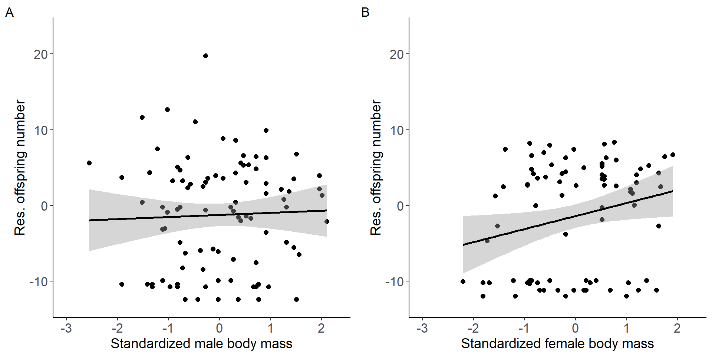
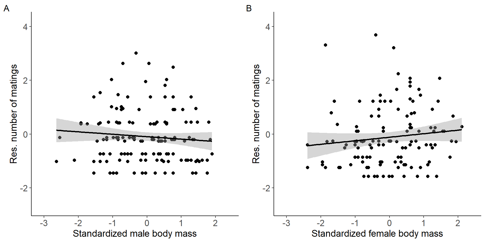
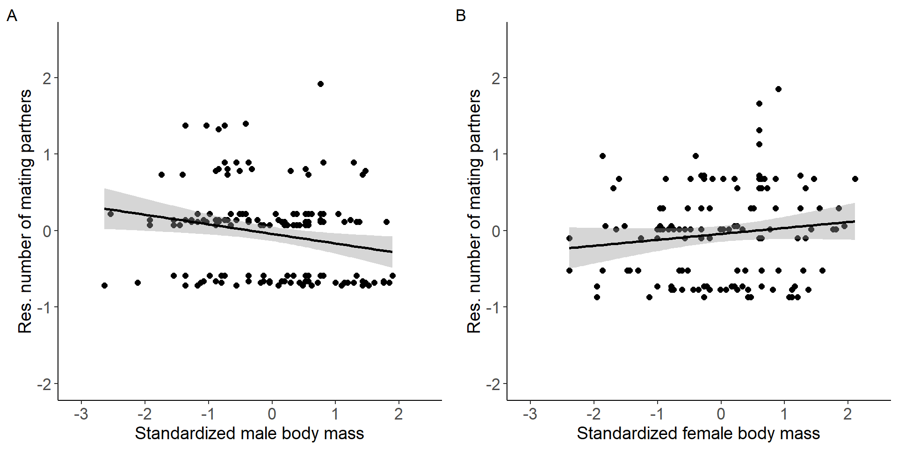
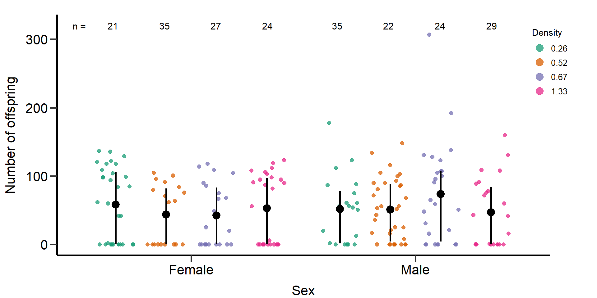
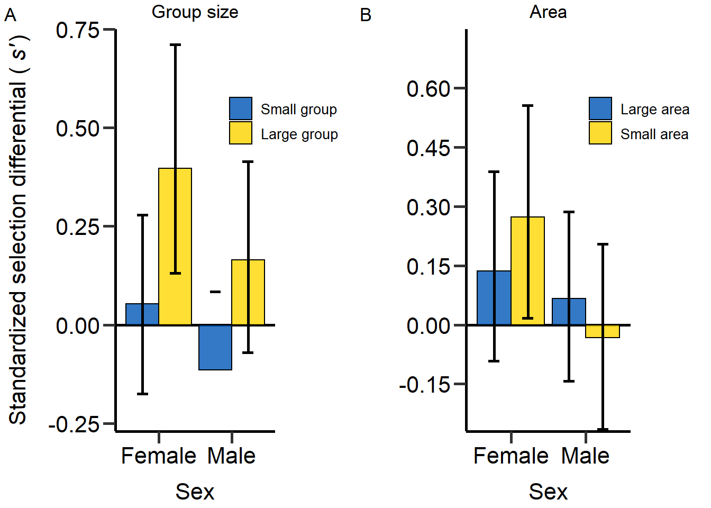

Last updated: 2022-08-12
Checks: 6 1
Knit directory:
Density_and_sexual_selection_2022/
This reproducible R Markdown analysis was created with workflowr (version 1.7.0). The Checks tab describes the reproducibility checks that were applied when the results were created. The Past versions tab lists the development history.
The R Markdown file has unstaged changes. To know which version of
the R Markdown file created these results, you’ll want to first commit
it to the Git repo. If you’re still working on the analysis, you can
ignore this warning. When you’re finished, you can run
wflow_publish to commit the R Markdown file and build the
HTML.
Great job! The global environment was empty. Objects defined in the global environment can affect the analysis in your R Markdown file in unknown ways. For reproduciblity it’s best to always run the code in an empty environment.
The command set.seed(20210613) was run prior to running
the code in the R Markdown file. Setting a seed ensures that any results
that rely on randomness, e.g. subsampling or permutations, are
reproducible.
Great job! Recording the operating system, R version, and package versions is critical for reproducibility.
Nice! There were no cached chunks for this analysis, so you can be confident that you successfully produced the results during this run.
Great job! Using relative paths to the files within your workflowr project makes it easier to run your code on other machines.
Great! You are using Git for version control. Tracking code development and connecting the code version to the results is critical for reproducibility.
The results in this page were generated with repository version f89f7c1. See the Past versions tab to see a history of the changes made to the R Markdown and HTML files.
Note that you need to be careful to ensure that all relevant files for
the analysis have been committed to Git prior to generating the results
(you can use wflow_publish or
wflow_git_commit). workflowr only checks the R Markdown
file, but you know if there are other scripts or data files that it
depends on. Below is the status of the Git repository when the results
were generated:
Ignored files:
Ignored: .Rhistory
Ignored: .Rproj.user/
Untracked files:
Untracked: analysis/a_start.Rmd
Untracked: analysis/index6.Rmd
Unstaged changes:
Modified: analysis/_site.yml
Modified: analysis/index.Rmd
Modified: analysis/index2.Rmd
Modified: analysis/index3.Rmd
Modified: analysis/index4.Rmd
Modified: analysis/index5.Rmd
Deleted: analysis/start.Rmd
Note that any generated files, e.g. HTML, png, CSS, etc., are not included in this status report because it is ok for generated content to have uncommitted changes.
These are the previous versions of the repository in which changes were
made to the R Markdown (analysis/index4.Rmd) and HTML
(docs/index4.html) files. If you’ve configured a remote Git
repository (see ?wflow_git_remote), click on the hyperlinks
in the table below to view the files as they were in that past version.
| File | Version | Author | Date | Message |
|---|---|---|---|---|
| Rmd | f89f7c1 | LennartWinkler | 2022-08-10 | Build site. |
| html | f89f7c1 | LennartWinkler | 2022-08-10 | Build site. |
Supplementary material reporting R code for the manuscript ‘Population density affects sexual selection in the red flour beetle’.
Before we started the analyses, we loaded all necessary packages and data.
#load packages
rm(list = ls())
library(ggeffects)
library(ggplot2)
library(gridExtra)
library(lme4)
library(lmerTest)
library(readr)
library(dplyr)
library(EnvStats)
library(cowplot)
library(gridGraphics)
library(car)
library(RColorBrewer)
library(boot)
library(data.table)
library(base)
library(tidyr)
library(ICC)
#load data
DB_data=read_delim("./data/DB_AllData_V04.CSV",";", escape_double = FALSE, trim_ws = TRUE)
#Set factors and level factors
DB_data$Week=as.factor(DB_data$Week)
DB_data$Date=as.factor(DB_data$Date)
DB_data$Sex=as.factor(DB_data$Sex)
DB_data$Gr_size=as.factor(DB_data$Gr_size)
DB_data$Gr_size <- factor(DB_data$Gr_size, levels=c("SG","LG"))
DB_data$Area=as.factor(DB_data$Area)
#Load Body mass data
DB_BM_female <- read_delim("./data/DB_mass_focals_female.CSV",
";", escape_double = FALSE, trim_ws = TRUE)
DB_BM_male <- read_delim("./data/DB_mass_focals_males.CSV",
";", escape_double = FALSE, trim_ws = TRUE)
DB_data_m=merge(DB_data,DB_BM_male,by.x = 'Well_ID',by.y = 'ID_male_focals')
DB_data_f=merge(DB_data,DB_BM_female,by.x = 'F1_ID',by.y = 'ID_female_focals')
DB_data=rbind(DB_data_m,DB_data_f)
###Exclude incomplete data
DB_data=DB_data[DB_data$excluded!=1,]
#Exclude zero MS (all data)####
DB_data=DB_data[DB_data$MatingPartners_number!=0,]
#Calculate total offspring number ####
DB_data$Total_N_MTP1=colSums(rbind(DB_data$N_MTP1_1,DB_data$N_MTP1_2,DB_data$N_MTP1_3,DB_data$N_MTP1_4,DB_data$N_MTP1_5,DB_data$N_MTP1_6), na.rm = T)
DB_data$Total_N_Rd=colSums(rbind(DB_data$N_RD_1,DB_data$N_RD_2,DB_data$N_RD_3,DB_data$N_RD_4,DB_data$N_RD_5,DB_data$N_RD_6), na.rm = T)/DB_data$N_comp
#Calculate proportional RS ####
#Percentage focal offspring
DB_data$m_prop_RS=NA
DB_data$m_prop_RS=(DB_data$Total_N_MTP1/(DB_data$Total_N_MTP1+DB_data$Total_N_Rd))*100
DB_data$m_prop_RS[DB_data$Sex=='F']=NA
DB_data$f_prop_RS=NA
DB_data$f_prop_RS=(DB_data$Total_N_MTP1/(DB_data$Total_N_MTP1+DB_data$Total_N_Rd))*100
DB_data$f_prop_RS[DB_data$Sex=='M']=NA
#Calculate proportion of successful matings ####
DB_data$Prop_MS=NA
DB_data$Prop_MS=DB_data$Matings_number/(DB_data$Attempts_number+DB_data$Matings_number)
DB_data$Prop_MS[DB_data$Prop_MS==0]=NA
#Calculate total encounters ####
DB_data$Total_Encounters=NA
DB_data$Total_Encounters=DB_data$Attempts_number+DB_data$Matings_number
# Treatment identifier for each density ####
n=1
DB_data$Treatment=NA
for(n in 1:length(DB_data$Sex)){if(DB_data$Gr_size[n]=='SG' && DB_data$Area[n]=='Large'){DB_data$Treatment[n]='D = 0.26'
}else if(DB_data$Gr_size[n]=='LG' && DB_data$Area[n]=='Large'){DB_data$Treatment[n]='D = 0.52'
}else if(DB_data$Gr_size[n]=='SG' && DB_data$Area[n]=='Small'){DB_data$Treatment[n]='D = 0.67'
}else if(DB_data$Gr_size[n]=='LG' && DB_data$Area[n]=='Small'){DB_data$Treatment[n]='D = 1.33'
}else{DB_data$Treatment[n]=NA}}
DB_data$Treatment=as.factor(DB_data$Treatment)
# Exclude Incubator 3 data #### -> poor performance
DB_data_clean=DB_data[DB_data$Incu3!=1,]
# Calculate genetic MS ####
# Only clean data
DB_data_clean$gMS=NA
for(i in 1:length(DB_data_clean$Sex)) {if (DB_data_clean$N_MTP1_1[i]>=1 & !is.na (DB_data_clean$N_MTP1_1[i])){
DB_data_clean$gMS[i]=1
}else{DB_data_clean$gMS[i]=0}}
for(i in 1:length(DB_data_clean$Sex)) {if (DB_data_clean$N_MTP1_2[i]>=1 & !is.na (DB_data_clean$N_MTP1_2[i])){
DB_data_clean$gMS[i]=DB_data_clean$gMS[i]+1
}else{}}
for(i in 1:length(DB_data_clean$Sex)) {if (DB_data_clean$N_MTP1_3[i]>=1 & !is.na (DB_data_clean$N_MTP1_3[i])){
DB_data_clean$gMS[i]=DB_data_clean$gMS[i]+1}else{}}
for(i in 1:length(DB_data_clean$Sex)) {if (DB_data_clean$N_MTP1_4[i]>=1 & !is.na (DB_data_clean$N_MTP1_4[i])){
DB_data_clean$gMS[i]=DB_data_clean$gMS[i]+1}else{}}
for(i in 1:length(DB_data_clean$Sex)) {if (DB_data_clean$N_MTP1_5[i]>=1 & !is.na (DB_data_clean$N_MTP1_5[i])){
DB_data_clean$gMS[i]=DB_data_clean$gMS[i]+1}else{}}
for(i in 1:length(DB_data_clean$Sex)) {if (DB_data_clean$N_MTP1_6[i]>=1 & !is.na (DB_data_clean$N_MTP1_6[i])){
DB_data_clean$gMS[i]=DB_data_clean$gMS[i]+1}else{}}
# All data
DB_data$gMS=NA
for(i in 1:length(DB_data$Sex)) {if (DB_data$N_MTP1_1[i]>=1 & !is.na (DB_data$N_MTP1_1[i])){
DB_data$gMS[i]=1
}else{DB_data$gMS[i]=0}}
for(i in 1:length(DB_data$Sex)) {if (DB_data$N_MTP1_2[i]>=1 & !is.na (DB_data$N_MTP1_2[i])){
DB_data$gMS[i]=DB_data$gMS[i]+1
}else{}}
for(i in 1:length(DB_data$Sex)) {if (DB_data$N_MTP1_3[i]>=1 & !is.na (DB_data$N_MTP1_3[i])){
DB_data$gMS[i]=DB_data$gMS[i]+1}else{}}
for(i in 1:length(DB_data$Sex)) {if (DB_data$N_MTP1_4[i]>=1 & !is.na (DB_data$N_MTP1_4[i])){
DB_data$gMS[i]=DB_data$gMS[i]+1}else{}}
for(i in 1:length(DB_data$Sex)) {if (DB_data$N_MTP1_5[i]>=1 & !is.na (DB_data$N_MTP1_5[i])){
DB_data$gMS[i]=DB_data$gMS[i]+1}else{}}
for(i in 1:length(DB_data$Sex)) {if (DB_data$N_MTP1_6[i]>=1 & !is.na (DB_data$N_MTP1_6[i])){
DB_data$gMS[i]=DB_data$gMS[i]+1}else{}}
#Calculate Rd competition RS ####
DB_data_clean$m_RS_Rd_comp=NA
for(i in 1:length(DB_data_clean$Sex)) {if (DB_data_clean$N_MTP1_1[i]>=1 & !is.na (DB_data_clean$N_MTP1_1[i])){
DB_data_clean$m_RS_Rd_comp[i]=DB_data_clean$N_RD_1[i]
}else{DB_data_clean$m_RS_Rd_comp[i]=0}}
for(i in 1:length(DB_data_clean$Sex)) {if (DB_data_clean$N_MTP1_2[i]>=1 & !is.na (DB_data_clean$N_MTP1_2[i])){
DB_data_clean$m_RS_Rd_comp[i]=DB_data_clean$m_RS_Rd_comp[i]+DB_data_clean$N_RD_2[i]
}else{}}
for(i in 1:length(DB_data_clean$Sex)) {if (DB_data_clean$N_MTP1_3[i]>=1 & !is.na (DB_data_clean$N_MTP1_3[i])){
DB_data_clean$m_RS_Rd_comp[i]=DB_data_clean$m_RS_Rd_comp[i]+DB_data_clean$N_RD_3[i]
}else{}}
for(i in 1:length(DB_data_clean$Sex)) {if (DB_data_clean$N_MTP1_4[i]>=1 & !is.na (DB_data_clean$N_MTP1_4[i])){
DB_data_clean$m_RS_Rd_comp[i]=DB_data_clean$m_RS_Rd_comp[i]+DB_data_clean$N_RD_4[i]
}else{}}
for(i in 1:length(DB_data_clean$Sex)) {if (DB_data_clean$N_MTP1_5[i]>=1 & !is.na (DB_data_clean$N_MTP1_5[i])){
DB_data_clean$m_RS_Rd_comp[i]=DB_data_clean$m_RS_Rd_comp[i]+DB_data_clean$N_RD_5[i]
}else{}}
for(i in 1:length(DB_data_clean$Sex)) {if (DB_data_clean$N_MTP1_6[i]>=1 & !is.na (DB_data_clean$N_MTP1_6[i])){
DB_data_clean$m_RS_Rd_comp[i]=DB_data_clean$m_RS_Rd_comp[i]+DB_data_clean$N_RD_6[i]
}else{}}
# Check matings of males #### -> add copulations where offspring found but no copulation registered
for(i in 1:length(DB_data_clean$Sex)) {if (DB_data_clean$N_MTP1_1[i]>=1 && DB_data_clean$Cop_Fe_1[i]==0 & !is.na (DB_data_clean$Cop_Fe_1[i])& !is.na (DB_data_clean$N_MTP1_1[i])){
DB_data_clean$Cop_Fe_1[i]=1}else{}}
for(i in 1:length(DB_data_clean$Sex)) {if (DB_data_clean$N_MTP1_2[i]>=1 && DB_data_clean$Cop_Fe_2[i]==0 & !is.na (DB_data_clean$Cop_Fe_2[i])& !is.na (DB_data_clean$N_MTP1_2[i])){
DB_data_clean$Cop_Fe_2[i]=1}else{}}
for(i in 1:length(DB_data_clean$Sex)) {if (DB_data_clean$N_MTP1_3[i]>=1 && DB_data_clean$Cop_Fe_3[i]==0 & !is.na (DB_data_clean$Cop_Fe_3[i])& !is.na (DB_data_clean$N_MTP1_3[i])){
DB_data_clean$Cop_Fe_3[i]=1}else{}}
for(i in 1:length(DB_data_clean$Sex)) {if (DB_data_clean$N_MTP1_4[i]>=1 && DB_data_clean$Cop_Fe_4[i]==0 & !is.na (DB_data_clean$Cop_Fe_4[i])& !is.na (DB_data_clean$N_MTP1_4[i])){
DB_data_clean$Cop_Fe_4[i]=1}else{}}
for(i in 1:length(DB_data_clean$Sex)) {if (DB_data_clean$N_MTP1_5[i]>=1 && DB_data_clean$Cop_Fe_5[i]==0 & !is.na (DB_data_clean$Cop_Fe_5[i])& !is.na (DB_data_clean$N_MTP1_5[i])){
DB_data_clean$Cop_Fe_5[i]=1}else{}}
for(i in 1:length(DB_data_clean$Sex)) {if (DB_data_clean$N_MTP1_6[i]>=1 && DB_data_clean$Cop_Fe_6[i]==0 & !is.na (DB_data_clean$Cop_Fe_6[i])& !is.na (DB_data_clean$N_MTP1_6[i])){
DB_data_clean$Cop_Fe_6[i]=1}else{}}
# Calculate Rd competition RS of all copulations with potential sperm competition with the focal ####
DB_data_clean$m_RS_Rd_comp_full=NA
for(i in 1:length(DB_data_clean$Sex)) {if (DB_data_clean$Cop_Fe_1[i]>=1 & !is.na (DB_data_clean$Cop_Fe_1[i])){
DB_data_clean$m_RS_Rd_comp_full[i]=DB_data_clean$N_RD_1[i]
}else{DB_data_clean$m_RS_Rd_comp_full[i]=0}}
for(i in 1:length(DB_data_clean$Sex)) {if (DB_data_clean$Cop_Fe_2[i]>=1 & !is.na (DB_data_clean$Cop_Fe_2[i])){
DB_data_clean$m_RS_Rd_comp_full[i]=DB_data_clean$m_RS_Rd_comp_full[i]+DB_data_clean$N_RD_2[i]
}else{}}
for(i in 1:length(DB_data_clean$Sex)) {if (DB_data_clean$Cop_Fe_3[i]>=1 & !is.na (DB_data_clean$Cop_Fe_3[i])){
DB_data_clean$m_RS_Rd_comp_full[i]=DB_data_clean$m_RS_Rd_comp_full[i]+DB_data_clean$N_RD_3[i]
}else{}}
for(i in 1:length(DB_data_clean$Sex)) {if (DB_data_clean$Cop_Fe_4[i]>=1 & !is.na (DB_data_clean$Cop_Fe_4[i])){
DB_data_clean$m_RS_Rd_comp_full[i]=DB_data_clean$m_RS_Rd_comp_full[i]+DB_data_clean$N_RD_4[i]
}else{}}
for(i in 1:length(DB_data_clean$Sex)) {if (DB_data_clean$Cop_Fe_5[i]>=1 & !is.na (DB_data_clean$Cop_Fe_5[i])){
DB_data_clean$m_RS_Rd_comp_full[i]=DB_data_clean$m_RS_Rd_comp_full[i]+DB_data_clean$N_RD_5[i]
}else{}}
for(i in 1:length(DB_data_clean$Sex)) {if (DB_data_clean$Cop_Fe_6[i]>=1 & !is.na (DB_data_clean$Cop_Fe_6[i])){
DB_data_clean$m_RS_Rd_comp_full[i]=DB_data_clean$m_RS_Rd_comp_full[i]+DB_data_clean$N_RD_6[i]
}else{}}
# Calculate trait values ####
# Males ####
# Total number of matings (all data)
DB_data$m_TotMatings=NA
DB_data$m_TotMatings=DB_data$Matings_number
DB_data$m_TotMatings[DB_data$Sex=='F']=NA
# Avarage mating duration (all data)
DB_data$MatingDuration_av[DB_data$MatingDuration_av==0]=NA
DB_data$m_MatingDuration_av=NA
DB_data$m_MatingDuration_av=DB_data$MatingDuration_av
DB_data$m_MatingDuration_av[DB_data$Sex=='F']=NA
DB_data$MatingDuration_av[DB_data$MatingDuration_av==0]=NA
# Total number of mating attempts (all data)
DB_data$m_Attempts_number=NA
DB_data$m_Attempts_number=DB_data$Attempts_number
DB_data$m_Attempts_number[DB_data$Sex=='F']=NA
# Proportional mating success (all data)
DB_data$m_Prop_MS=NA
DB_data$m_Prop_MS=DB_data$Prop_MS
DB_data$m_Prop_MS[DB_data$Sex=='F']=NA
#Total encounters (all data)
DB_data$m_Total_Encounters=NA
DB_data$m_Total_Encounters=DB_data$Total_Encounters
DB_data$m_Total_Encounters[DB_data$Sex=='F']=NA
# Reproductive success
DB_data_clean$m_RS=NA
DB_data_clean$m_RS=DB_data_clean$Total_N_MTP1
DB_data_clean$m_RS[DB_data_clean$Sex=='F']=NA
# Mating success (number of different partners)
# Clean data
DB_data_clean$m_cMS=NA
DB_data_clean$m_cMS=DB_data_clean$MatingPartners_number
DB_data_clean$m_cMS[DB_data_clean$Sex=='F']=NA
for(i in 1:length(DB_data_clean$m_cMS)) {if (DB_data_clean$gMS[i]>DB_data_clean$m_cMS[i] & !is.na (DB_data_clean$m_cMS[i])){
DB_data_clean$m_cMS[i]=DB_data_clean$gMS[i]}else{}}
# All data
DB_data$m_cMS=NA
DB_data$m_cMS=DB_data$MatingPartners_number
DB_data$m_cMS[DB_data$Sex=='F']=NA
for(i in 1:length(DB_data$m_cMS)) {if (DB_data$gMS[i]>DB_data$m_cMS[i] & !is.na (DB_data$m_cMS[i])){
DB_data$m_cMS[i]=DB_data$gMS[i]}else{}}
# Insemination success
DB_data_clean$m_InSuc=NA
DB_data_clean$m_InSuc=DB_data_clean$gMS/DB_data_clean$m_cMS
for(i in 1:length(DB_data_clean$m_InSuc)) {if (DB_data_clean$m_cMS[i]==0 & !is.na (DB_data_clean$m_cMS[i])){
DB_data_clean$m_InSuc[i]=NA}else{}}
# Fertilization success
DB_data_clean$m_feSuc=NA
DB_data_clean$m_feSuc=DB_data_clean$m_RS/(DB_data_clean$m_RS+DB_data_clean$m_RS_Rd_comp)
for(i in 1:length(DB_data_clean$m_feSuc)) {if (DB_data_clean$m_InSuc[i]==0 | is.na (DB_data_clean$m_InSuc[i])){
DB_data_clean$m_feSuc[i]=NA}else{}}
# Fecundicty of partners
DB_data_clean$m_pFec=NA
DB_data_clean$m_pFec=(DB_data_clean$m_RS+DB_data_clean$m_RS_Rd_comp)/DB_data_clean$gMS
for(i in 1:length(DB_data_clean$m_pFec)) {if (DB_data_clean$gMS[i]==0){
DB_data_clean$m_pFec[i]=NA}else{}}
# Paternity success
DB_data_clean$m_PS=NA
DB_data_clean$m_PS=DB_data_clean$m_RS/(DB_data_clean$m_RS+DB_data_clean$m_RS_Rd_comp_full)
for(i in 1:length(DB_data_clean$m_PS)) {if (DB_data_clean$m_RS[i]==0 & !is.na (DB_data_clean$m_RS[i])){
DB_data_clean$m_PS[i]=NA}else{}}
# Fecundity of partners in all females the focal copulated with
DB_data_clean$m_pFec_compl=NA
DB_data_clean$m_pFec_compl=(DB_data_clean$m_RS+DB_data_clean$m_RS_Rd_comp_full)/DB_data_clean$m_cMS
for(i in 1:length(DB_data_clean$m_pFec)) {if (DB_data_clean$m_cMS[i]==0 & !is.na (DB_data_clean$m_cMS[i])){
DB_data_clean$m_pFec[i]=NA}else{}}
# Females ####
# Total number of matings (all data)
DB_data$f_TotMatings=NA
DB_data$f_TotMatings=DB_data$Matings_number
DB_data$f_TotMatings[DB_data$Sex=='M']=NA
# Avarage mating duration (all data)
DB_data$f_MatingDuration_av=NA
DB_data$f_MatingDuration_av=DB_data$MatingDuration_av
DB_data$f_MatingDuration_av[DB_data$Sex=='M']=NA
DB_data$MatingDuration_av[DB_data$MatingDuration_av==0]=NA
# Total number of mating attempts (all data)
DB_data$f_Attempts_number=NA
DB_data$f_Attempts_number=DB_data$Attempts_number
DB_data$f_Attempts_number[DB_data$Sex=='M']=NA
# Proportional mating success (all data)
DB_data$f_Prop_MS=NA
DB_data$f_Prop_MS=DB_data$Prop_MS
DB_data_clean$f_Prop_MS[DB_data_clean$Sex=='M']=NA
#Total encounters (all data)
DB_data$f_Total_Encounters=NA
DB_data$f_Total_Encounters=DB_data$Total_Encounters
DB_data$f_Total_Encounters[DB_data$Sex=='M']=NA
# Reproductive success
DB_data_clean$f_RS=NA
DB_data_clean$f_RS=DB_data_clean$Total_N_MTP1
DB_data_clean$f_RS[DB_data_clean$Sex=='M']=NA
# Mating success (number of different partners)
# Clean data
DB_data_clean$f_cMS=NA
DB_data_clean$f_cMS=DB_data_clean$MatingPartners_number
DB_data_clean$f_cMS[DB_data_clean$Sex=='M']=NA
for(i in 1:length(DB_data_clean$f_cMS)) {if (DB_data_clean$gMS[i]>DB_data_clean$f_cMS[i] & !is.na (DB_data_clean$f_cMS[i])){
DB_data_clean$f_cMS[i]=DB_data_clean$gMS[i]}else{}}
# All data
DB_data$f_cMS=NA
DB_data$f_cMS=DB_data$MatingPartners_number
DB_data$f_cMS[DB_data$Sex=='M']=NA
for(i in 1:length(DB_data$f_cMS)) {if (DB_data$gMS[i]>DB_data$f_cMS[i] & !is.na (DB_data$f_cMS[i])){
DB_data$f_cMS[i]=DB_data$gMS[i]}else{}}
# Fecundity per mating partner
DB_data_clean$f_fec_pMate=NA
DB_data_clean$f_fec_pMate=DB_data_clean$f_RS/DB_data_clean$f_cMS
for(i in 1:length(DB_data_clean$f_fec_pMate)) {if (DB_data_clean$f_RS[i]==0 & !is.na (DB_data_clean$f_RS[i])){
DB_data_clean$f_fec_pMate[i]=0}else{}}
for(i in 1:length(DB_data_clean$f_fec_pMate)) {if (DB_data_clean$f_cMS[i]==0 & !is.na (DB_data_clean$f_cMS[i])){
DB_data_clean$f_fec_pMate[i]=NA}else{}}
# Relativize data per treatment and sex ####
# Small group + large Area
DB_data_clean_0.26=DB_data_clean[DB_data_clean$Treatment=='D = 0.26',]
DB_data_clean_0.26$rel_m_RS=NA
DB_data_clean_0.26$rel_m_prop_RS=NA
DB_data_clean_0.26$rel_m_cMS=NA
DB_data_clean_0.26$rel_m_InSuc=NA
DB_data_clean_0.26$rel_m_feSuc=NA
DB_data_clean_0.26$rel_m_pFec=NA
DB_data_clean_0.26$rel_m_PS=NA
DB_data_clean_0.26$rel_m_pFec_compl=NA
DB_data_clean_0.26$rel_f_RS=NA
DB_data_clean_0.26$rel_f_prop_RS=NA
DB_data_clean_0.26$rel_f_cMS=NA
DB_data_clean_0.26$rel_f_fec_pMate=NA
DB_data_clean_0.26$rel_m_RS=DB_data_clean_0.26$m_RS/mean(DB_data_clean_0.26$m_RS,na.rm=T)
DB_data_clean_0.26$rel_m_prop_RS=DB_data_clean_0.26$m_prop_RS/mean(DB_data_clean_0.26$m_prop_RS,na.rm=T)
DB_data_clean_0.26$rel_m_cMS=DB_data_clean_0.26$m_cMS/mean(DB_data_clean_0.26$m_cMS,na.rm=T)
DB_data_clean_0.26$rel_m_InSuc=DB_data_clean_0.26$m_InSuc/mean(DB_data_clean_0.26$m_InSuc,na.rm=T)
DB_data_clean_0.26$rel_m_feSuc=DB_data_clean_0.26$m_feSuc/mean(DB_data_clean_0.26$m_feSuc,na.rm=T)
DB_data_clean_0.26$rel_m_pFec=DB_data_clean_0.26$m_pFec/mean(DB_data_clean_0.26$m_pFec,na.rm=T)
DB_data_clean_0.26$rel_m_PS=DB_data_clean_0.26$m_PS/mean(DB_data_clean_0.26$m_PS,na.rm=T)
DB_data_clean_0.26$rel_m_pFec_compl=DB_data_clean_0.26$m_pFec_compl/mean(DB_data_clean_0.26$m_pFec_compl,na.rm=T)
DB_data_clean_0.26$rel_f_RS=DB_data_clean_0.26$f_RS/mean(DB_data_clean_0.26$f_RS,na.rm=T)
DB_data_clean_0.26$rel_f_prop_RS=DB_data_clean_0.26$f_prop_RS/mean(DB_data_clean_0.26$f_prop_RS,na.rm=T)
DB_data_clean_0.26$rel_f_cMS=DB_data_clean_0.26$f_cMS/mean(DB_data_clean_0.26$f_cMS,na.rm=T)
DB_data_clean_0.26$rel_f_fec_pMate=DB_data_clean_0.26$f_fec_pMate/mean(DB_data_clean_0.26$f_fec_pMate,na.rm=T)
# Large group + large Area
DB_data_clean_0.52=DB_data_clean[DB_data_clean$Treatment=='D = 0.52',]
#Relativize data
DB_data_clean_0.52$rel_m_RS=NA
DB_data_clean_0.52$rel_m_prop_RS=NA
DB_data_clean_0.52$rel_m_cMS=NA
DB_data_clean_0.52$rel_m_InSuc=NA
DB_data_clean_0.52$rel_m_feSuc=NA
DB_data_clean_0.52$rel_m_pFec=NA
DB_data_clean_0.52$rel_m_PS=NA
DB_data_clean_0.52$rel_m_pFec_compl=NA
DB_data_clean_0.52$rel_f_RS=NA
DB_data_clean_0.52$rel_f_prop_RS=NA
DB_data_clean_0.52$rel_f_cMS=NA
DB_data_clean_0.52$rel_f_fec_pMate=NA
DB_data_clean_0.52$rel_m_RS=DB_data_clean_0.52$m_RS/mean(DB_data_clean_0.52$m_RS,na.rm=T)
DB_data_clean_0.52$rel_m_prop_RS=DB_data_clean_0.52$m_prop_RS/mean(DB_data_clean_0.52$m_prop_RS,na.rm=T)
DB_data_clean_0.52$rel_m_cMS=DB_data_clean_0.52$m_cMS/mean(DB_data_clean_0.52$m_cMS,na.rm=T)
DB_data_clean_0.52$rel_m_InSuc=DB_data_clean_0.52$m_InSuc/mean(DB_data_clean_0.52$m_InSuc,na.rm=T)
DB_data_clean_0.52$rel_m_feSuc=DB_data_clean_0.52$m_feSuc/mean(DB_data_clean_0.52$m_feSuc,na.rm=T)
DB_data_clean_0.52$rel_m_pFec=DB_data_clean_0.52$m_pFec/mean(DB_data_clean_0.52$m_pFec,na.rm=T)
DB_data_clean_0.52$rel_m_PS=DB_data_clean_0.52$m_PS/mean(DB_data_clean_0.52$m_PS,na.rm=T)
DB_data_clean_0.52$rel_m_pFec_compl=DB_data_clean_0.52$m_pFec_compl/mean(DB_data_clean_0.52$m_pFec_compl,na.rm=T)
DB_data_clean_0.52$rel_f_RS=DB_data_clean_0.52$f_RS/mean(DB_data_clean_0.52$f_RS,na.rm=T)
DB_data_clean_0.52$rel_f_prop_RS=DB_data_clean_0.52$f_prop_RS/mean(DB_data_clean_0.52$f_prop_RS,na.rm=T)
DB_data_clean_0.52$rel_f_cMS=DB_data_clean_0.52$f_cMS/mean(DB_data_clean_0.52$f_cMS,na.rm=T)
DB_data_clean_0.52$rel_f_fec_pMate=DB_data_clean_0.52$f_fec_pMate/mean(DB_data_clean_0.52$f_fec_pMate,na.rm=T)
# Small group + small Area
DB_data_clean_0.67=DB_data_clean[DB_data_clean$Treatment=='D = 0.67',]
#Relativize data
DB_data_clean_0.67$rel_m_RS=NA
DB_data_clean_0.67$rel_m_prop_RS=NA
DB_data_clean_0.67$rel_m_cMS=NA
DB_data_clean_0.67$rel_m_InSuc=NA
DB_data_clean_0.67$rel_m_feSuc=NA
DB_data_clean_0.67$rel_m_pFec=NA
DB_data_clean_0.67$rel_m_PS=NA
DB_data_clean_0.67$rel_m_pFec_compl=NA
DB_data_clean_0.67$rel_f_RS=NA
DB_data_clean_0.67$rel_f_prop_RS=NA
DB_data_clean_0.67$rel_f_cMS=NA
DB_data_clean_0.67$rel_f_fec_pMate=NA
DB_data_clean_0.67$rel_m_RS=DB_data_clean_0.67$m_RS/mean(DB_data_clean_0.67$m_RS,na.rm=T)
DB_data_clean_0.67$rel_m_prop_RS=DB_data_clean_0.67$m_prop_RS/mean(DB_data_clean_0.67$m_prop_RS,na.rm=T)
DB_data_clean_0.67$rel_m_cMS=DB_data_clean_0.67$m_cMS/mean(DB_data_clean_0.67$m_cMS,na.rm=T)
DB_data_clean_0.67$rel_m_InSuc=DB_data_clean_0.67$m_InSuc/mean(DB_data_clean_0.67$m_InSuc,na.rm=T)
DB_data_clean_0.67$rel_m_feSuc=DB_data_clean_0.67$m_feSuc/mean(DB_data_clean_0.67$m_feSuc,na.rm=T)
DB_data_clean_0.67$rel_m_pFec=DB_data_clean_0.67$m_pFec/mean(DB_data_clean_0.67$m_pFec,na.rm=T)
DB_data_clean_0.67$rel_m_PS=DB_data_clean_0.67$m_PS/mean(DB_data_clean_0.67$m_PS,na.rm=T)
DB_data_clean_0.67$rel_m_pFec_compl=DB_data_clean_0.67$m_pFec_compl/mean(DB_data_clean_0.67$m_pFec_compl,na.rm=T)
DB_data_clean_0.67$rel_f_RS=DB_data_clean_0.67$f_RS/mean(DB_data_clean_0.67$f_RS,na.rm=T)
DB_data_clean_0.67$rel_f_prop_RS=DB_data_clean_0.67$f_prop_RS/mean(DB_data_clean_0.67$f_prop_RS,na.rm=T)
DB_data_clean_0.67$rel_f_cMS=DB_data_clean_0.67$f_cMS/mean(DB_data_clean_0.67$f_cMS,na.rm=T)
DB_data_clean_0.67$rel_f_fec_pMate=DB_data_clean_0.67$f_fec_pMate/mean(DB_data_clean_0.67$f_fec_pMate,na.rm=T)
# Large group + small Area
DB_data_clean_1.33=DB_data_clean[DB_data_clean$Treatment=='D = 1.33',]
#Relativize data
DB_data_clean_1.33$rel_m_RS=NA
DB_data_clean_1.33$rel_m_prop_RS=NA
DB_data_clean_1.33$rel_m_cMS=NA
DB_data_clean_1.33$rel_m_InSuc=NA
DB_data_clean_1.33$rel_m_feSuc=NA
DB_data_clean_1.33$rel_m_pFec=NA
DB_data_clean_1.33$rel_m_PS=NA
DB_data_clean_1.33$rel_m_pFec_compl=NA
DB_data_clean_1.33$rel_f_RS=NA
DB_data_clean_1.33$rel_f_prop_RS=NA
DB_data_clean_1.33$rel_f_cMS=NA
DB_data_clean_1.33$rel_f_fec_pMate=NA
DB_data_clean_1.33$rel_m_RS=DB_data_clean_1.33$m_RS/mean(DB_data_clean_1.33$m_RS,na.rm=T)
DB_data_clean_1.33$rel_m_prop_RS=DB_data_clean_1.33$m_prop_RS/mean(DB_data_clean_1.33$m_prop_RS,na.rm=T)
DB_data_clean_1.33$rel_m_cMS=DB_data_clean_1.33$m_cMS/mean(DB_data_clean_1.33$m_cMS,na.rm=T)
DB_data_clean_1.33$rel_m_InSuc=DB_data_clean_1.33$m_InSuc/mean(DB_data_clean_1.33$m_InSuc,na.rm=T)
DB_data_clean_1.33$rel_m_feSuc=DB_data_clean_1.33$m_feSuc/mean(DB_data_clean_1.33$m_feSuc,na.rm=T)
DB_data_clean_1.33$rel_m_pFec=DB_data_clean_1.33$m_pFec/mean(DB_data_clean_1.33$m_pFec,na.rm=T)
DB_data_clean_1.33$rel_m_PS=DB_data_clean_1.33$m_PS/mean(DB_data_clean_1.33$m_PS,na.rm=T)
DB_data_clean_1.33$rel_m_pFec_compl=DB_data_clean_1.33$m_pFec_compl/mean(DB_data_clean_1.33$m_pFec_compl,na.rm=T)
DB_data_clean_1.33$rel_f_RS=DB_data_clean_1.33$f_RS/mean(DB_data_clean_1.33$f_RS,na.rm=T)
DB_data_clean_1.33$rel_f_prop_RS=DB_data_clean_1.33$f_prop_RS/mean(DB_data_clean_1.33$f_prop_RS,na.rm=T)
DB_data_clean_1.33$rel_f_cMS=DB_data_clean_1.33$f_cMS/mean(DB_data_clean_1.33$f_cMS,na.rm=T)
DB_data_clean_1.33$rel_f_fec_pMate=DB_data_clean_1.33$f_fec_pMate/mean(DB_data_clean_1.33$f_fec_pMate,na.rm=T)
# Set colors for figures
colpal=brewer.pal(4, 'Dark2')
colpal2=brewer.pal(3, 'Set1')
colpal3=brewer.pal(4, 'Paired')
slava_ukrajini=(c('#0057B8','#FFD700'))
colorESEB=c('#01519c','#ffdf33')
colorESEB2=c('#1DA1F2','#ffec69')
# Merge data according to treatment #### -> Reduce treatments to area and population size
#Area
DB_data_clean_Large_area=rbind(DB_data_clean_0.26,DB_data_clean_0.52)
DB_data_clean_Small_area=rbind(DB_data_clean_0.67,DB_data_clean_1.33)
#Population size
DB_data_clean_Small_pop=rbind(DB_data_clean_0.26,DB_data_clean_0.67)
DB_data_clean_Large_pop=rbind(DB_data_clean_0.52,DB_data_clean_1.33)
# Merge data according to treatment full data set #### -> Reduce treatments to area and population size
DB_data_0.26=DB_data[DB_data$Treatment=='D = 0.26',]
DB_data_0.52=DB_data[DB_data$Treatment=='D = 0.52',]
DB_data_0.67=DB_data[DB_data$Treatment=='D = 0.67',]
DB_data_1.33=DB_data[DB_data$Treatment=='D = 1.33',]
#Area
DB_data_Large_area_full=rbind(DB_data_0.26,DB_data_0.52)
DB_data_Small_area_full=rbind(DB_data_0.67,DB_data_1.33)
#Population size
DB_data_Small_pop_full=rbind(DB_data_0.26,DB_data_0.67)
DB_data_Large_pop_full=rbind(DB_data_0.52,DB_data_1.33)Correlation between body mass and reproductive success (selection gradient).
# Effect of body mass on reproductive success - Selection gradient ####
#Male
DB_data_clean_M=DB_data_clean[DB_data_clean$Sex=='M',]
#Standardize body mass
DB_data_clean_M$stder_BM_focal=NA
DB_data_clean_M$stder_BM_focal=DB_data_clean_M$Body_mass_mg_focal-mean(DB_data_clean_M$Body_mass_mg_focal)
DB_data_clean_M$stder_BM_focal=DB_data_clean_M$stder_BM_focal/sd(DB_data_clean_M$Body_mass_mg_focal)
#Model treatment
treat1M=glm(m_RS~Gr_size*Area,data=DB_data_clean_M,family = quasipoisson)
DB_data_clean_M$res_RS=NA
DB_data_clean_M$res_RS=residuals(treat1M)
# Males
p3=ggplot(DB_data_clean_M, aes(x=stder_BM_focal, y=res_RS)) +
geom_point(size = 2)+xlab('Standardized male body mass')+ylab('Res. offspring number')+labs(tag = "A")+
geom_smooth(method=lm,color="black")+ theme(axis.text=element_text(size=13),axis.title=element_text(size=14)) +
theme(panel.grid.major = element_blank(), panel.grid.minor = element_blank(),panel.background = element_blank(), axis.line = element_line(colour = "black"))+
xlim(-3,2.3)+ylim(-13,23)
#Females
DB_data_clean_F=DB_data_clean[DB_data_clean$Sex=='F',]
#Standardize body mass
DB_data_clean_F$stder_BM_focal=NA
DB_data_clean_F$stder_BM_focal=DB_data_clean_F$Body_mass_mg_focal-mean(DB_data_clean_F$Body_mass_mg_focal)
DB_data_clean_F$stder_BM_focal=DB_data_clean_F$stder_BM_focal/sd(DB_data_clean_F$Body_mass_mg_focal)
#Model treatment
treat1F=glm(f_RS~Gr_size*Area,data=DB_data_clean_F,family = quasipoisson)
DB_data_clean_F$res_RS=NA
DB_data_clean_F$res_RS=residuals(treat1F)
p4=ggplot(DB_data_clean_F, aes(x=stder_BM_focal, y=res_RS)) +
geom_point(size = 2)+xlab('Standardized female body mass')+ylab('Res. offspring number')+labs(tag = "B")+
geom_smooth(method=lm,color="black")+ theme(axis.text=element_text(size=13),axis.title=element_text(size=14)) +
theme(panel.grid.major = element_blank(), panel.grid.minor = element_blank(),panel.background = element_blank(), axis.line = element_line(colour = "black"))+
xlim(-3,2.3)+ylim(-13,23)
grid.arrange(p3,p4, nrow = 1,ncol=2)
Figure 1: Scatter plots of relationship between standardized body mass
and residual offspring number for males (A) and females (B).
Statistical tests
Selection gradient for males
mod2=glm(res_RS~stder_BM_focal,data=DB_data_clean_M,family = gaussian)
summary(mod2)
Call:
glm(formula = res_RS ~ stder_BM_focal, family = gaussian, data = DB_data_clean_M)
Deviance Residuals:
Min 1Q Median 3Q Max
-11.5619 -6.7037 0.9734 5.1401 21.0961
Coefficients:
Estimate Std. Error t value Pr(>|t|)
(Intercept) -1.2364 0.7457 -1.658 0.101
stder_BM_focal 0.2772 0.7497 0.370 0.712
(Dispersion parameter for gaussian family taken to be 52.26889)
Null deviance: 4815.9 on 93 degrees of freedom
Residual deviance: 4808.7 on 92 degrees of freedom
AIC: 642.64
Number of Fisher Scoring iterations: 2Selection gradient for females
mod3=glm(res_RS~stder_BM_focal,data=DB_data_clean_F,family = gaussian)
summary(mod3)
Call:
glm(formula = res_RS ~ stder_BM_focal, family = gaussian, data = DB_data_clean_F)
Deviance Residuals:
Min 1Q Median 3Q Max
-12.479 -7.400 2.617 5.992 11.163
Coefficients:
Estimate Std. Error t value Pr(>|t|)
(Intercept) -1.3833 0.7826 -1.768 0.0809 .
stder_BM_focal 1.7184 0.7873 2.183 0.0320 *
---
Signif. codes: 0 '***' 0.001 '**' 0.01 '*' 0.05 '.' 0.1 ' ' 1
(Dispersion parameter for gaussian family taken to be 50.83104)
Null deviance: 4359.5 on 82 degrees of freedom
Residual deviance: 4117.3 on 81 degrees of freedom
AIC: 565.59
Number of Fisher Scoring iterations: 2Testing for a sex difference (sex x treatment interaction).
DB_data_clean_C=rbind(DB_data_clean_F,DB_data_clean_M)
mod4=glm(res_RS~stder_BM_focal*Sex,data=DB_data_clean_C,family = gaussian)
summary(mod4)
Call:
glm(formula = res_RS ~ stder_BM_focal * Sex, family = gaussian,
data = DB_data_clean_C)
Deviance Residuals:
Min 1Q Median 3Q Max
-12.479 -7.188 1.359 5.697 21.096
Coefficients:
Estimate Std. Error t value Pr(>|t|)
(Intercept) -1.3833 0.7884 -1.754 0.0811 .
stder_BM_focal 1.7184 0.7932 2.166 0.0317 *
SexM 0.1469 1.0819 0.136 0.8922
stder_BM_focal:SexM -1.4412 1.0881 -1.324 0.1871
---
Signif. codes: 0 '***' 0.001 '**' 0.01 '*' 0.05 '.' 0.1 ' ' 1
(Dispersion parameter for gaussian family taken to be 51.59567)
Null deviance: 9176.3 on 176 degrees of freedom
Residual deviance: 8926.1 on 173 degrees of freedom
AIC: 1206.2
Number of Fisher Scoring iterations: 2#Anova(mod4,type=3) #If the interactions are not significant, type II gives a more powerful test.
Anova(mod4,type=2)Analysis of Deviance Table (Type II tests)
Response: res_RS
LR Chisq Df Pr(>Chisq)
stder_BM_focal 3.07742 1 0.07939 .
Sex 0.01843 1 0.89201
stder_BM_focal:Sex 1.75426 1 0.18534
---
Signif. codes: 0 '***' 0.001 '**' 0.01 '*' 0.05 '.' 0.1 ' ' 1Correlation between body mass and reproductive behaviour:
-
Number of matings
- Number of mating partners (mating success)
-
Proportion of successful matings
Correlation between body mass and the number of matings.
# Effect of body mass on mating number ####
# Males
DB_data_M=DB_data[DB_data$Sex=='M',]
#Standardize body mass
DB_data_M$stder_BM_focal=NA
DB_data_M$stder_BM_focal=DB_data_M$Body_mass_mg_focal-mean(DB_data_M$Body_mass_mg_focal)
DB_data_M$stder_BM_focal=DB_data_M$stder_BM_focal/sd(DB_data_M$Body_mass_mg_focal)
#Model treatment
treat1M_MR=glm(m_TotMatings~Gr_size*Area,data=DB_data_M,family = quasipoisson)
DB_data_M$res_MR=NA
DB_data_M$res_MR=residuals(treat1M_MR)
p5=ggplot(DB_data_M, aes(x=stder_BM_focal, y=res_MR)) +
geom_point(size = 2)+xlab('Standardized male body mass')+ylab('Res. number of matings')+labs(tag = "A")+
geom_smooth(method=lm,color="black")+ theme(axis.text=element_text(size=13),axis.title=element_text(size=14)) +
theme(panel.grid.major = element_blank(), panel.grid.minor = element_blank(),panel.background = element_blank(), axis.line = element_line(colour = "black"))+
xlim(-3.1,2.4)+ylim(-2.7,4.2)
#Females
DB_data_F=DB_data[DB_data$Sex=='F',]
#Standardize body mass
DB_data_F$stder_BM_focal=NA
DB_data_F$stder_BM_focal=DB_data_F$Body_mass_mg_focal-mean(DB_data_F$Body_mass_mg_focal)
DB_data_F$stder_BM_focal=DB_data_F$stder_BM_focal/sd(DB_data_F$Body_mass_mg_focal)
#Model treatment
treat1F_MR=glm(f_TotMatings~Gr_size*Area,data=DB_data_F,family = quasipoisson)
DB_data_F$res_MR=NA
DB_data_F$res_MR=residuals(treat1F_MR)
p6=ggplot(DB_data_F, aes(x=stder_BM_focal, y=res_MR)) +
geom_point(size = 2)+xlab('Standardized female body mass')+ylab('Res. number of matings')+labs(tag = "B")+
geom_smooth(method=lm,color="black")+ theme(axis.text=element_text(size=13),axis.title=element_text(size=14)) +
theme(panel.grid.major = element_blank(), panel.grid.minor = element_blank(),panel.background = element_blank(), axis.line = element_line(colour = "black"))+
xlim(-3.1,2.4)+ylim(-2.7,4.2)
grid.arrange(p5,p6, nrow = 1,ncol=2)
Figure 2: Scatter plots of relationship between standardized body mass
and residual number of matings for males (A) and females (B).
Statistical tests
Males
mod5=glm(res_MR~stder_BM_focal,data=DB_data_M,family = gaussian)
summary(mod5)
Call:
glm(formula = res_MR ~ stder_BM_focal, family = gaussian, data = DB_data_M)
Deviance Residuals:
Min 1Q Median 3Q Max
-1.4957 -0.7416 -0.0996 0.5039 3.0823
Coefficients:
Estimate Std. Error t value Pr(>|t|)
(Intercept) -0.09342 0.07977 -1.171 0.243
stder_BM_focal -0.08999 0.08004 -1.124 0.263
(Dispersion parameter for gaussian family taken to be 0.9418522)
Null deviance: 138.70 on 147 degrees of freedom
Residual deviance: 137.51 on 146 degrees of freedom
AIC: 415.13
Number of Fisher Scoring iterations: 2Females
mod6=glm(res_MR~stder_BM_focal,data=DB_data_F,family = gaussian)
summary(mod6)
Call:
glm(formula = res_MR ~ stder_BM_focal, family = gaussian, data = DB_data_F)
Deviance Residuals:
Min 1Q Median 3Q Max
-1.6308 -0.8157 -0.1462 0.4894 3.8638
Coefficients:
Estimate Std. Error t value Pr(>|t|)
(Intercept) -0.11468 0.09579 -1.197 0.233
stder_BM_focal 0.13139 0.09617 1.366 0.174
(Dispersion parameter for gaussian family taken to be 1.192956)
Null deviance: 154.93 on 129 degrees of freedom
Residual deviance: 152.70 on 128 degrees of freedom
AIC: 395.84
Number of Fisher Scoring iterations: 2Testing for a sex difference (sex x treatment interaction).
#Sex difference?
DB_data_clean_C=rbind(DB_data_F,DB_data_M)
mod4=glm(res_MR~stder_BM_focal*Sex,data=DB_data_clean_C,family = gaussian)
summary(mod4)
Call:
glm(formula = res_MR ~ stder_BM_focal * Sex, family = gaussian,
data = DB_data_clean_C)
Deviance Residuals:
Min 1Q Median 3Q Max
-1.6308 -0.7629 -0.1142 0.5141 3.8638
Coefficients:
Estimate Std. Error t value Pr(>|t|)
(Intercept) -0.11468 0.09026 -1.271 0.2050
stder_BM_focal 0.13139 0.09061 1.450 0.1482
SexM 0.02126 0.12371 0.172 0.8637
stder_BM_focal:SexM -0.22138 0.12416 -1.783 0.0757 .
---
Signif. codes: 0 '***' 0.001 '**' 0.01 '*' 0.05 '.' 0.1 ' ' 1
(Dispersion parameter for gaussian family taken to be 1.059156)
Null deviance: 293.66 on 277 degrees of freedom
Residual deviance: 290.21 on 274 degrees of freedom
AIC: 810.88
Number of Fisher Scoring iterations: 2Anova(mod4,type=3) #If the interactions are not significant, type II gives a more powerful test.Analysis of Deviance Table (Type III tests)
Response: res_MR
LR Chisq Df Pr(>Chisq)
stder_BM_focal 2.1025 1 0.14706
Sex 0.0295 1 0.86356
stder_BM_focal:Sex 3.1792 1 0.07458 .
---
Signif. codes: 0 '***' 0.001 '**' 0.01 '*' 0.05 '.' 0.1 ' ' 1#Anova(mod4,type=2)Correlation between body mass and the number of mating partners.
# Effect of body mass on mating success ####
# Males
#Model treatment
treat1M_MS=glm(m_cMS~Gr_size*Area,data=DB_data_M,family = quasipoisson)
DB_data_M$res_MS=NA
DB_data_M$res_MS=residuals(treat1M_MS)
p7=ggplot(DB_data_M, aes(x=stder_BM_focal, y=res_MS)) +
geom_point(size = 2)+xlab('Standardized male body mass')+ylab('Res. number of mating partners')+labs(tag = "A")+
geom_smooth(method=lm,color="black")+ theme(axis.text=element_text(size=13),axis.title=element_text(size=14)) +
theme(panel.grid.major = element_blank(), panel.grid.minor = element_blank(),panel.background = element_blank(), axis.line = element_line(colour = "black"))+
xlim(-3.1,2.4)+ylim(-2,2.5)
#Females
#Model treatment
treat1F_MS=glm(f_cMS~Gr_size*Area,data=DB_data_F,family = quasipoisson)
DB_data_F$res_MS=NA
DB_data_F$res_MS=residuals(treat1F_MS)
p8=ggplot(DB_data_F, aes(x=stder_BM_focal, y=res_MS)) +
geom_point(size = 2)+xlab('Standardized female body mass')+ylab('Res. number of mating partners')+labs(tag = "B")+
geom_smooth(method=lm,color="black")+ theme(axis.text=element_text(size=13),axis.title=element_text(size=14)) +
theme(panel.grid.major = element_blank(), panel.grid.minor = element_blank(),panel.background = element_blank(), axis.line = element_line(colour = "black"))+
xlim(-3.1,2.4)+ylim(-2,2.5)
grid.arrange(p7,p8, nrow = 1,ncol=2)
Figure 3: Scatter plots of relationship between standardized body mass
and residual number of mating partners for males (A) and females
(B).
Statistical tests
Males
mod7=glm(res_MS~stder_BM_focal,data=DB_data_M,family = gaussian)
summary(mod7)
Call:
glm(formula = res_MS ~ stder_BM_focal, family = gaussian, data = DB_data_M)
Deviance Residuals:
Min 1Q Median 3Q Max
-1.00809 -0.50217 0.06056 0.30451 2.05489
Coefficients:
Estimate Std. Error t value Pr(>|t|)
(Intercept) -0.04299 0.04770 -0.901 0.36888
stder_BM_focal -0.12517 0.04786 -2.615 0.00985 **
---
Signif. codes: 0 '***' 0.001 '**' 0.01 '*' 0.05 '.' 0.1 ' ' 1
(Dispersion parameter for gaussian family taken to be 0.3367239)
Null deviance: 51.465 on 147 degrees of freedom
Residual deviance: 49.162 on 146 degrees of freedom
AIC: 262.9
Number of Fisher Scoring iterations: 2Females
mod7=glm(res_MS~stder_BM_focal,data=DB_data_F,family = gaussian)
summary(mod7)
Call:
glm(formula = res_MS ~ stder_BM_focal, family = gaussian, data = DB_data_F)
Deviance Residuals:
Min 1Q Median 3Q Max
-0.92287 -0.59400 0.05225 0.40061 1.82309
Coefficients:
Estimate Std. Error t value Pr(>|t|)
(Intercept) -0.04305 0.05237 -0.822 0.413
stder_BM_focal 0.07770 0.05257 1.478 0.142
(Dispersion parameter for gaussian family taken to be 0.3564838)
Null deviance: 46.409 on 129 degrees of freedom
Residual deviance: 45.630 on 128 degrees of freedom
AIC: 238.82
Number of Fisher Scoring iterations: 2Testing for a sex difference (sex x treatment interaction).
#Sex difference?
DB_data_clean_C=rbind(DB_data_F,DB_data_M)
mod4=glm(res_MS~stder_BM_focal*Sex,data=DB_data_clean_C,family = gaussian)
summary(mod4)
Call:
glm(formula = res_MS ~ stder_BM_focal * Sex, family = gaussian,
data = DB_data_clean_C)
Deviance Residuals:
Min 1Q Median 3Q Max
-1.00809 -0.53221 0.05423 0.33212 2.05489
Coefficients:
Estimate Std. Error t value Pr(>|t|)
(Intercept) -4.305e-02 5.159e-02 -0.835 0.40468
stder_BM_focal 7.770e-02 5.179e-02 1.500 0.13467
SexM 5.968e-05 7.070e-02 0.001 0.99933
stder_BM_focal:SexM -2.029e-01 7.096e-02 -2.859 0.00458 **
---
Signif. codes: 0 '***' 0.001 '**' 0.01 '*' 0.05 '.' 0.1 ' ' 1
(Dispersion parameter for gaussian family taken to be 0.3459548)
Null deviance: 97.873 on 277 degrees of freedom
Residual deviance: 94.792 on 274 degrees of freedom
AIC: 499.82
Number of Fisher Scoring iterations: 2#Anova(mod4,type=3) #If the interactions are not significant, type II gives a more powerful test.
Anova(mod4,type=2)Analysis of Deviance Table (Type II tests)
Response: res_MS
LR Chisq Df Pr(>Chisq)
stder_BM_focal 0.7348 1 0.391320
Sex 0.0000 1 0.999326
stder_BM_focal:Sex 8.1734 1 0.004251 **
---
Signif. codes: 0 '***' 0.001 '**' 0.01 '*' 0.05 '.' 0.1 ' ' 1Correlation between body mass and the proportion of successful matings.
# Effect of BM on proportion successful matings ####
# Males
#Model treatment
treat1M_Prop_MS=glm(Prop_MS~Gr_size*Area,data=DB_data_M,family = quasibinomial,na.action=na.exclude)
DB_data_M$res_Prop_MS=NA
DB_data_M$res_Prop_MS=residuals(treat1M_Prop_MS)
p9=ggplot(DB_data_M, aes(x=stder_BM_focal, y=res_Prop_MS)) +
geom_point(size = 2)+xlab('Standardized male body mass')+ylab('Res. prop. of successful matings')+labs(tag = "A")+
geom_smooth(method=lm,color="black")+ theme(axis.text=element_text(size=13),axis.title=element_text(size=14)) +
theme(panel.grid.major = element_blank(), panel.grid.minor = element_blank(),panel.background = element_blank(), axis.line = element_line(colour = "black"))+
xlim(-3.1,2.4)+ylim(-0.8,1.6)
#Females
#Model treatment
treat1F_Prop_MS=glm(Prop_MS~Gr_size*Area,data=DB_data_F,family = quasibinomial,na.action=na.exclude)
DB_data_F$res_Prop_MS=NA
DB_data_F$res_Prop_MS=residuals(treat1F_Prop_MS)
p10=ggplot(DB_data_F, aes(x=stder_BM_focal, y=res_Prop_MS)) +
geom_point(size = 2)+xlab('Standardized female body mass')+ylab('Res. prop. of successful matings')+labs(tag = "B")+
geom_smooth(method=lm,color="black")+ theme(axis.text=element_text(size=13),axis.title=element_text(size=14)) +
theme(panel.grid.major = element_blank(), panel.grid.minor = element_blank(),panel.background = element_blank(), axis.line = element_line(colour = "black"))+
xlim(-3.1,2.4)+ylim(-0.8,1.6)
grid.arrange(p9,p10, nrow = 1,ncol=2)
Figure 4: Scatter plots of relationship between standardized body mass
and residual proportion of successful matings for males (A) and females
(B).
Statistical tests
Males
mod7=glm(res_Prop_MS~stder_BM_focal,data=DB_data_M,family = gaussian)
summary(mod7)
Call:
glm(formula = res_Prop_MS ~ stder_BM_focal, family = gaussian,
data = DB_data_M)
Deviance Residuals:
Min 1Q Median 3Q Max
-0.68186 -0.27630 -0.04741 0.22588 1.43708
Coefficients:
Estimate Std. Error t value Pr(>|t|)
(Intercept) -0.01380 0.03206 -0.430 0.668
stder_BM_focal -0.03420 0.03217 -1.063 0.290
(Dispersion parameter for gaussian family taken to be 0.1521604)
Null deviance: 22.387 on 147 degrees of freedom
Residual deviance: 22.215 on 146 degrees of freedom
AIC: 145.33
Number of Fisher Scoring iterations: 2Females
mod7=glm(res_Prop_MS~stder_BM_focal,data=DB_data_F,family = gaussian)
summary(mod7)
Call:
glm(formula = res_Prop_MS ~ stder_BM_focal, family = gaussian,
data = DB_data_F)
Deviance Residuals:
Min 1Q Median 3Q Max
-0.73785 -0.35714 -0.07916 0.23794 1.49479
Coefficients:
Estimate Std. Error t value Pr(>|t|)
(Intercept) -0.007106 0.041641 -0.171 0.865
stder_BM_focal -0.029418 0.041802 -0.704 0.483
(Dispersion parameter for gaussian family taken to be 0.2254128)
Null deviance: 28.964 on 129 degrees of freedom
Residual deviance: 28.853 on 128 degrees of freedom
AIC: 179.23
Number of Fisher Scoring iterations: 2Testing for a sex difference (sex x treatment interaction).
#Sex difference?
DB_data_clean_C=rbind(DB_data_F,DB_data_M)
mod4=glm(res_Prop_MS~stder_BM_focal*Sex,data=DB_data_clean_C,family = gaussian)
summary(mod4)
Call:
glm(formula = res_Prop_MS ~ stder_BM_focal * Sex, family = gaussian,
data = DB_data_clean_C)
Deviance Residuals:
Min 1Q Median 3Q Max
-0.7379 -0.3174 -0.0581 0.2367 1.4948
Coefficients:
Estimate Std. Error t value Pr(>|t|)
(Intercept) -0.007106 0.037864 -0.188 0.851
stder_BM_focal -0.029418 0.038011 -0.774 0.440
SexM -0.006693 0.051894 -0.129 0.897
stder_BM_focal:SexM -0.004779 0.052084 -0.092 0.927
(Dispersion parameter for gaussian family taken to be 0.1863805)
Null deviance: 51.355 on 277 degrees of freedom
Residual deviance: 51.068 on 274 degrees of freedom
AIC: 327.87
Number of Fisher Scoring iterations: 2#Anova(mod4,type=3) #If the interactions are not significant, type II gives a more powerful test.
Anova(mod4,type=2)Analysis of Deviance Table (Type II tests)
Response: res_Prop_MS
LR Chisq Df Pr(>Chisq)
stder_BM_focal 1.51294 1 0.2187
Sex 0.01664 1 0.8974
stder_BM_focal:Sex 0.00842 1 0.9269Here we tested the interaction of the density treatment and body mass. ## Reproductive success Males
#Males
#Model treatment
ModT1=glm(m_RS~stder_BM_focal*Gr_size*Area,data=DB_data_clean_M,family = quasipoisson)
summary(ModT1)
Call:
glm(formula = m_RS ~ stder_BM_focal * Gr_size * Area, family = quasipoisson,
data = DB_data_clean_M)
Deviance Residuals:
Min 1Q Median 3Q Max
-13.1783 -7.5980 -0.5555 4.2488 19.1579
Coefficients:
Estimate Std. Error t value Pr(>|t|)
(Intercept) 3.954040 0.272154 14.529 <2e-16 ***
stder_BM_focal -0.177449 0.268124 -0.662 0.510
Gr_sizeLG -0.001700 0.334625 -0.005 0.996
AreaSmall 0.388076 0.315040 1.232 0.221
stder_BM_focal:Gr_sizeLG 0.373144 0.321645 1.160 0.249
stder_BM_focal:AreaSmall -0.003027 0.311340 -0.010 0.992
Gr_sizeLG:AreaSmall -0.316841 0.429240 -0.738 0.462
stder_BM_focal:Gr_sizeLG:AreaSmall -0.057911 0.428434 -0.135 0.893
---
Signif. codes: 0 '***' 0.001 '**' 0.01 '*' 0.05 '.' 0.1 ' ' 1
(Dispersion parameter for quasipoisson family taken to be 48.00628)
Null deviance: 5078.4 on 93 degrees of freedom
Residual deviance: 4801.4 on 86 degrees of freedom
AIC: NA
Number of Fisher Scoring iterations: 6#Anova(ModT1,type=3) #If the interactions are not significant, type II gives a more powerful test.
Anova(ModT1,type=2)Analysis of Deviance Table (Type II tests)
Response: m_RS
LR Chisq Df Pr(>Chisq)
stder_BM_focal 0.00516 1 0.9428
Gr_size 1.55068 1 0.2130
Area 1.41358 1 0.2345
stder_BM_focal:Gr_size 2.64055 1 0.1042
stder_BM_focal:Area 0.02462 1 0.8753
Gr_size:Area 0.53760 1 0.4634
stder_BM_focal:Gr_size:Area 0.01831 1 0.8924Females
#Females
#Model treatment
ModT2=glm(f_RS~stder_BM_focal*Gr_size*Area,data=DB_data_clean_F,family = quasipoisson)
summary(ModT2)
Call:
glm(formula = f_RS ~ stder_BM_focal * Gr_size * Area, family = quasipoisson,
data = DB_data_clean_F)
Deviance Residuals:
Min 1Q Median 3Q Max
-13.7556 -9.2530 0.4482 4.4361 8.7849
Coefficients:
Estimate Std. Error t value Pr(>|t|)
(Intercept) 4.126806 0.148440 27.801 <2e-16 ***
stder_BM_focal 0.005908 0.163105 0.036 0.971
Gr_sizeLG -0.214517 0.274951 -0.780 0.438
AreaSmall -0.245157 0.257992 -0.950 0.345
stder_BM_focal:Gr_sizeLG 0.393885 0.280492 1.404 0.164
stder_BM_focal:AreaSmall 0.116191 0.263713 0.441 0.661
Gr_sizeLG:AreaSmall 0.513361 0.397955 1.290 0.201
stder_BM_focal:Gr_sizeLG:AreaSmall -0.144470 0.403540 -0.358 0.721
---
Signif. codes: 0 '***' 0.001 '**' 0.01 '*' 0.05 '.' 0.1 ' ' 1
(Dispersion parameter for quasipoisson family taken to be 40.81761)
Null deviance: 4614.9 on 82 degrees of freedom
Residual deviance: 4213.6 on 75 degrees of freedom
AIC: NA
Number of Fisher Scoring iterations: 6#Anova(ModT2,type=3) #If the interactions are not significant, type II gives a more powerful test.
Anova(ModT2,type=2)Analysis of Deviance Table (Type II tests)
Response: f_RS
LR Chisq Df Pr(>Chisq)
stder_BM_focal 4.3187 1 0.0377 *
Gr_size 0.2370 1 0.6264
Area 0.0075 1 0.9309
stder_BM_focal:Gr_size 2.6569 1 0.1031
stder_BM_focal:Area 0.0753 1 0.7838
Gr_size:Area 1.5655 1 0.2109
stder_BM_focal:Gr_size:Area 0.1280 1 0.7205
---
Signif. codes: 0 '***' 0.001 '**' 0.01 '*' 0.05 '.' 0.1 ' ' 1Males
#Males
#Model treatment
ModT1=glm(m_TotMatings~stder_BM_focal*Gr_size*Area,data=DB_data_M,family = quasipoisson)
summary(ModT1)
Call:
glm(formula = m_TotMatings ~ stder_BM_focal * Gr_size * Area,
family = quasipoisson, data = DB_data_M)
Deviance Residuals:
Min 1Q Median 3Q Max
-1.6856 -0.8063 -0.2506 0.4052 3.0341
Coefficients:
Estimate Std. Error t value Pr(>|t|)
(Intercept) 1.09422 0.11439 9.566 <2e-16 ***
stder_BM_focal -0.20788 0.12467 -1.667 0.0977 .
Gr_sizeLG -0.22437 0.15426 -1.454 0.1480
AreaSmall 0.06663 0.14561 0.458 0.6479
stder_BM_focal:Gr_sizeLG 0.05993 0.15728 0.381 0.7037
stder_BM_focal:AreaSmall 0.31593 0.16132 1.958 0.0522 .
Gr_sizeLG:AreaSmall -0.06739 0.21653 -0.311 0.7561
stder_BM_focal:Gr_sizeLG:AreaSmall -0.17206 0.21930 -0.785 0.4340
---
Signif. codes: 0 '***' 0.001 '**' 0.01 '*' 0.05 '.' 0.1 ' ' 1
(Dispersion parameter for quasipoisson family taken to be 1.051652)
Null deviance: 150.57 on 147 degrees of freedom
Residual deviance: 133.32 on 140 degrees of freedom
AIC: NA
Number of Fisher Scoring iterations: 5#Anova(ModT1,type=3) #If the interactions are not significant, type II gives a more powerful test.
Anova(ModT1,type=2)Analysis of Deviance Table (Type II tests)
Response: m_TotMatings
LR Chisq Df Pr(>Chisq)
stder_BM_focal 1.0748 1 0.29986
Gr_size 6.0960 1 0.01355 *
Area 0.0001 1 0.99236
stder_BM_focal:Gr_size 0.0666 1 0.79642
stder_BM_focal:Area 4.2526 1 0.03919 *
Gr_size:Area 0.0425 1 0.83660
stder_BM_focal:Gr_size:Area 0.6175 1 0.43197
---
Signif. codes: 0 '***' 0.001 '**' 0.01 '*' 0.05 '.' 0.1 ' ' 1Females
#Females
#Model treatment
ModT2=glm(f_TotMatings~stder_BM_focal*Gr_size*Area,data=DB_data_F,family = quasipoisson)
summary(ModT2)
Call:
glm(formula = f_TotMatings ~ stder_BM_focal * Gr_size * Area,
family = quasipoisson, data = DB_data_F)
Deviance Residuals:
Min 1Q Median 3Q Max
-1.7480 -0.9280 -0.2440 0.4159 3.6835
Coefficients:
Estimate Std. Error t value Pr(>|t|)
(Intercept) 1.23525 0.09436 13.091 <2e-16 ***
stder_BM_focal 0.08867 0.10032 0.884 0.3785
Gr_sizeLG -0.35397 0.18324 -1.932 0.0557 .
AreaSmall -0.20627 0.15982 -1.291 0.1993
stder_BM_focal:Gr_sizeLG 0.05581 0.19450 0.287 0.7746
stder_BM_focal:AreaSmall -0.11075 0.15319 -0.723 0.4711
Gr_sizeLG:AreaSmall 0.26686 0.26558 1.005 0.3170
stder_BM_focal:Gr_sizeLG:AreaSmall 0.08007 0.26841 0.298 0.7660
---
Signif. codes: 0 '***' 0.001 '**' 0.01 '*' 0.05 '.' 0.1 ' ' 1
(Dispersion parameter for quasipoisson family taken to be 1.422673)
Null deviance: 164.51 on 129 degrees of freedom
Residual deviance: 153.48 on 122 degrees of freedom
AIC: NA
Number of Fisher Scoring iterations: 5#Anova(ModT2,type=3) #If the interactions are not significant, type II gives a more powerful test.
Anova(ModT2,type=2)Analysis of Deviance Table (Type II tests)
Response: f_TotMatings
LR Chisq Df Pr(>Chisq)
stder_BM_focal 1.25493 1 0.26261
Gr_size 2.98878 1 0.08384 .
Area 0.77665 1 0.37817
stder_BM_focal:Gr_size 0.54131 1 0.46189
stder_BM_focal:Area 0.45100 1 0.50186
Gr_size:Area 1.07549 1 0.29971
stder_BM_focal:Gr_size:Area 0.08906 1 0.76538
---
Signif. codes: 0 '***' 0.001 '**' 0.01 '*' 0.05 '.' 0.1 ' ' 1Males
#Males
#Model treatment
ModT1=glm(m_cMS~stder_BM_focal*Gr_size*Area,data=DB_data_M,family = quasipoisson)
summary(ModT1)
Call:
glm(formula = m_cMS ~ stder_BM_focal * Gr_size * Area, family = quasipoisson,
data = DB_data_M)
Deviance Residuals:
Min 1Q Median 3Q Max
-1.18216 -0.57583 0.02865 0.22827 2.04740
Coefficients:
Estimate Std. Error t value Pr(>|t|)
(Intercept) 0.544710 0.087909 6.196 6.07e-09 ***
stder_BM_focal -0.147473 0.096691 -1.525 0.129
Gr_sizeLG 0.106417 0.111159 0.957 0.340
AreaSmall -0.009379 0.113832 -0.082 0.934
stder_BM_focal:Gr_sizeLG -0.011657 0.115438 -0.101 0.920
stder_BM_focal:AreaSmall 0.133668 0.125906 1.062 0.290
Gr_sizeLG:AreaSmall -0.013674 0.155859 -0.088 0.930
stder_BM_focal:Gr_sizeLG:AreaSmall -0.031775 0.159260 -0.200 0.842
---
Signif. codes: 0 '***' 0.001 '**' 0.01 '*' 0.05 '.' 0.1 ' ' 1
(Dispersion parameter for quasipoisson family taken to be 0.3658209)
Null deviance: 52.151 on 147 degrees of freedom
Residual deviance: 48.348 on 140 degrees of freedom
AIC: NA
Number of Fisher Scoring iterations: 4#Anova(ModT1,type=3) #If the interactions are not significant, type II gives a more powerful test.
Anova(ModT1,type=2)Analysis of Deviance Table (Type II tests)
Response: m_cMS
LR Chisq Df Pr(>Chisq)
stder_BM_focal 6.6646 1 0.009835 **
Gr_size 1.8376 1 0.175235
Area 0.2239 1 0.636070
stder_BM_focal:Gr_size 0.1272 1 0.721336
stder_BM_focal:Area 2.1917 1 0.138760
Gr_size:Area 0.0028 1 0.957900
stder_BM_focal:Gr_size:Area 0.0398 1 0.841791
---
Signif. codes: 0 '***' 0.001 '**' 0.01 '*' 0.05 '.' 0.1 ' ' 1Females
#Females
#Model treatment
ModT2=glm(f_cMS~stder_BM_focal*Gr_size*Area,data=DB_data_F,family = quasipoisson)
summary(ModT2)
Call:
glm(formula = f_cMS ~ stder_BM_focal * Gr_size * Area, family = quasipoisson,
data = DB_data_F)
Deviance Residuals:
Min 1Q Median 3Q Max
-0.9720 -0.5585 0.0150 0.3221 1.6148
Coefficients:
Estimate Std. Error t value Pr(>|t|)
(Intercept) 0.680000 0.063680 10.678 <2e-16 ***
stder_BM_focal 0.034497 0.068790 0.501 0.6169
Gr_sizeLG -0.031422 0.110661 -0.284 0.7769
AreaSmall -0.199312 0.107617 -1.852 0.0664 .
stder_BM_focal:Gr_sizeLG 0.121678 0.118143 1.030 0.3051
stder_BM_focal:AreaSmall -0.009005 0.104373 -0.086 0.9314
Gr_sizeLG:AreaSmall 0.304409 0.161742 1.882 0.0622 .
stder_BM_focal:Gr_sizeLG:AreaSmall -0.077820 0.162781 -0.478 0.6335
---
Signif. codes: 0 '***' 0.001 '**' 0.01 '*' 0.05 '.' 0.1 ' ' 1
(Dispersion parameter for quasipoisson family taken to be 0.3739008)
Null deviance: 49.041 on 129 degrees of freedom
Residual deviance: 45.228 on 122 degrees of freedom
AIC: NA
Number of Fisher Scoring iterations: 4#Anova(ModT2,type=3) #If the interactions are not significant, type II gives a more powerful test.
Anova(ModT2,type=2)Analysis of Deviance Table (Type II tests)
Response: f_cMS
LR Chisq Df Pr(>Chisq)
stder_BM_focal 2.4484 1 0.11764
Gr_size 2.0816 1 0.14908
Area 0.7566 1 0.38439
stder_BM_focal:Gr_size 0.9924 1 0.31916
stder_BM_focal:Area 0.2609 1 0.60948
Gr_size:Area 3.4738 1 0.06235 .
stder_BM_focal:Gr_size:Area 0.2285 1 0.63263
---
Signif. codes: 0 '***' 0.001 '**' 0.01 '*' 0.05 '.' 0.1 ' ' 1Males
#Males
#Model treatment
ModT1=glm(Prop_MS~stder_BM_focal*Gr_size*Area,data=DB_data_M,family = quasibinomial)
summary(ModT1)
Call:
glm(formula = Prop_MS ~ stder_BM_focal * Gr_size * Area, family = quasibinomial,
data = DB_data_M)
Deviance Residuals:
Min 1Q Median 3Q Max
-0.74502 -0.28399 -0.04377 0.21477 1.44401
Coefficients:
Estimate Std. Error t value Pr(>|t|)
(Intercept) -0.8085 0.1597 -5.063 1.28e-06 ***
stder_BM_focal -0.2788 0.1782 -1.564 0.120
Gr_sizeLG 0.1431 0.2055 0.696 0.487
AreaSmall 0.2038 0.2036 1.001 0.319
stder_BM_focal:Gr_sizeLG 0.2317 0.2140 1.083 0.281
stder_BM_focal:AreaSmall 0.2845 0.2274 1.251 0.213
Gr_sizeLG:AreaSmall -0.2449 0.2849 -0.860 0.391
stder_BM_focal:Gr_sizeLG:AreaSmall -0.2927 0.2921 -1.002 0.318
---
Signif. codes: 0 '***' 0.001 '**' 0.01 '*' 0.05 '.' 0.1 ' ' 1
(Dispersion parameter for quasibinomial family taken to be 0.1493034)
Null deviance: 22.477 on 147 degrees of freedom
Residual deviance: 21.992 on 140 degrees of freedom
AIC: NA
Number of Fisher Scoring iterations: 4#Anova(ModT1,type=3) #If the interactions are not significant, type II gives a more powerful test.
Anova(ModT1,type=2)Analysis of Deviance Table (Type II tests)
Response: Prop_MS
LR Chisq Df Pr(>Chisq)
stder_BM_focal 1.09858 1 0.2946
Gr_size 0.00190 1 0.9653
Area 0.15658 1 0.6923
stder_BM_focal:Gr_size 0.27316 1 0.6012
stder_BM_focal:Area 0.57881 1 0.4468
Gr_size:Area 0.55361 1 0.4568
stder_BM_focal:Gr_size:Area 1.00959 1 0.3150Females
#Females
#Model treatment
ModT2=glm(Prop_MS~stder_BM_focal*Gr_size*Area,data=DB_data_F,family = quasibinomial)
summary(ModT2)
Call:
glm(formula = Prop_MS ~ stder_BM_focal * Gr_size * Area, family = quasibinomial,
data = DB_data_F)
Deviance Residuals:
Min 1Q Median 3Q Max
-0.74862 -0.35523 -0.06568 0.24476 1.49450
Coefficients:
Estimate Std. Error t value Pr(>|t|)
(Intercept) -0.33525 0.13499 -2.484 0.0144 *
stder_BM_focal -0.07274 0.14779 -0.492 0.6235
Gr_sizeLG -0.14849 0.23744 -0.625 0.5329
AreaSmall -0.37714 0.22099 -1.707 0.0904 .
stder_BM_focal:Gr_sizeLG -0.31347 0.25385 -1.235 0.2193
stder_BM_focal:AreaSmall 0.11556 0.21641 0.534 0.5943
Gr_sizeLG:AreaSmall 0.42765 0.34409 1.243 0.2163
stder_BM_focal:Gr_sizeLG:AreaSmall 0.36737 0.34629 1.061 0.2908
---
Signif. codes: 0 '***' 0.001 '**' 0.01 '*' 0.05 '.' 0.1 ' ' 1
(Dispersion parameter for quasibinomial family taken to be 0.2073228)
Null deviance: 29.610 on 129 degrees of freedom
Residual deviance: 28.089 on 122 degrees of freedom
AIC: NA
Number of Fisher Scoring iterations: 3#Anova(ModT2,type=3) #If the interactions are not significant, type II gives a more powerful test.
Anova(ModT2,type=2)Analysis of Deviance Table (Type II tests)
Response: Prop_MS
LR Chisq Df Pr(>Chisq)
stder_BM_focal 0.43199 1 0.5110
Gr_size 0.13451 1 0.7138
Area 1.51521 1 0.2183
stder_BM_focal:Gr_size 0.46389 1 0.4958
stder_BM_focal:Area 2.42000 1 0.1198
Gr_size:Area 1.49477 1 0.2215
stder_BM_focal:Gr_size:Area 1.13236 1 0.2873Finally, we used bootstrapping to estimate treatment specific standardized selection differential on body mass.
# Selection coefficients ####
#All
#Males
#Bootstrap
selDif_BW_males = function(dataFrame, indexVector) {
#Calculate relative fitness
rel_fit_males=dataFrame[indexVector, match("m_RS",names(dataFrame))]/mean(dataFrame[indexVector, match("m_RS",names(dataFrame))],na.rm=T)
#Calculate selection differential
s = cov(dataFrame[indexVector, match("stder_BM_focal",names(dataFrame))],rel_fit_males,use="complete.obs",method = "pearson")
return(s)
}
boot_BW_males = boot(DB_data_clean_M, selDif_BW_males, R = 10000)
#Females
selDif_BW_females = function(dataFrame, indexVector) {
#Calculate relative fitness
rel_fit_females=dataFrame[indexVector, match("f_RS",names(dataFrame))]/mean(dataFrame[indexVector, match("f_RS",names(dataFrame))],na.rm=T)
#Calculate selection differential
s = cov(dataFrame[indexVector, match("stder_BM_focal",names(dataFrame))],rel_fit_females,use="complete.obs",method = "pearson")
return(s)
}
boot_BW_females = boot(DB_data_clean_F, selDif_BW_females, R = 10000)
# Selection coefficients for treatments
#Males
#Group size
#Small group
boot_BW_males_group_size_small = boot(DB_data_clean_M[DB_data_clean_M$Gr_size=='SG',], selDif_BW_males, R = 10000)
#Large group
boot_BW_males_group_size_large = boot(DB_data_clean_M[DB_data_clean_M$Gr_size=='LG',], selDif_BW_males, R = 10000)
#Area
#Large Area
boot_BW_males_area_large = boot(DB_data_clean_M[DB_data_clean_M$Area=='Large',], selDif_BW_males, R = 10000)
#Small Area
boot_BW_males_area_small = boot(DB_data_clean_M[DB_data_clean_M$Area=='Small',], selDif_BW_males, R = 10000)
#Females
#Group size
#Small group
boot_BW_females_group_size_small = boot(DB_data_clean_F[DB_data_clean_F$Gr_size=='SG',], selDif_BW_females, R = 10000)
#Large group
boot_BW_females_group_size_large = boot(DB_data_clean_F[DB_data_clean_F$Gr_size=='LG',], selDif_BW_females, R = 10000)
#Area
#Large Area
boot_BW_females_area_large = boot(DB_data_clean_F[DB_data_clean_F$Area=='Large',], selDif_BW_females, R = 10000)
#Small Area
boot_BW_females_area_small = boot(DB_data_clean_F[DB_data_clean_F$Area=='Small',], selDif_BW_females, R = 10000)
#Data table ####
boot_data_BW_males <- as.data.frame(cbind("Male", "Mass", "All", mean(boot_BW_males$t,na.rm=T), quantile(boot_BW_males$t,.025, names = FALSE,na.rm=T), quantile(boot_BW_males$t,.975, names = FALSE,na.rm=T)))
boot_data_BW_females <- as.data.frame(cbind("Female", "Mass", "All", mean(boot_BW_females$t,na.rm=T), quantile(boot_BW_females$t,.025, names = FALSE,na.rm=T), quantile(boot_BW_females$t,.975, names = FALSE,na.rm=T)))
boot_data_BW_males_group_size_small <- as.data.frame(cbind("Male", "Mass", "Small group", mean(boot_BW_males_group_size_small$t,na.rm=T), quantile(boot_BW_males_group_size_small$t,.025, names = FALSE,na.rm=T), quantile(boot_BW_males_group_size_small$t,.975, names = FALSE,na.rm=T)))
boot_data_BW_females_group_size_small <- as.data.frame(cbind("Female", "Mass", "Small group", mean(boot_BW_females_group_size_small$t,na.rm=T), quantile(boot_BW_females_group_size_small$t,.025, names = FALSE,na.rm=T), quantile(boot_BW_females_group_size_small$t,.975, names = FALSE,na.rm=T)))
boot_data_BW_males_group_size_large <- as.data.frame(cbind("Male", "Mass", "large group", mean(boot_BW_males_group_size_large$t,na.rm=T), quantile(boot_BW_males_group_size_large$t,.025, names = FALSE,na.rm=T), quantile(boot_BW_males_group_size_large$t,.975, names = FALSE,na.rm=T)))
boot_data_BW_females_group_size_large <- as.data.frame(cbind("Female", "Mass", "large group", mean(boot_BW_females_group_size_large$t,na.rm=T), quantile(boot_BW_females_group_size_large$t,.025, names = FALSE,na.rm=T), quantile(boot_BW_females_group_size_large$t,.975, names = FALSE,na.rm=T)))
boot_data_BW_males_area_small <- as.data.frame(cbind("Male", "Mass", "Small area", mean(boot_BW_males_area_small$t,na.rm=T), quantile(boot_BW_males_area_small$t,.025, names = FALSE,na.rm=T), quantile(boot_BW_males_area_small$t,.975, names = FALSE,na.rm=T)))
boot_data_BW_females_area_small <- as.data.frame(cbind("Female", "Mass", "Small area", mean(boot_BW_females_area_small$t,na.rm=T), quantile(boot_BW_females_area_small$t,.025, names = FALSE,na.rm=T), quantile(boot_BW_females_area_small$t,.975, names = FALSE,na.rm=T)))
boot_data_BW_males_area_large <- as.data.frame(cbind("Male", "Mass", "large area", mean(boot_BW_males_area_large$t,na.rm=T), quantile(boot_BW_males_area_large$t,.025, names = FALSE,na.rm=T), quantile(boot_BW_males_area_large$t,.975, names = FALSE,na.rm=T)))
boot_data_BW_females_area_large <- as.data.frame(cbind("Female", "Mass", "large area", mean(boot_BW_females_area_large$t,na.rm=T), quantile(boot_BW_females_area_large$t,.025, names = FALSE,na.rm=T), quantile(boot_BW_females_area_large$t,.975, names = FALSE,na.rm=T)))
SelDifBoot_Table <- as.table(as.matrix(rbind(boot_data_BW_males,boot_data_BW_females,boot_data_BW_males_group_size_small,boot_data_BW_females_group_size_small,
boot_data_BW_males_group_size_large,boot_data_BW_females_group_size_large,
boot_data_BW_males_area_small,boot_data_BW_females_area_small,
boot_data_BW_males_area_large,boot_data_BW_females_area_large)))
is.table(SelDifBoot_Table)
colnames(SelDifBoot_Table)[1] <- "Sex"
colnames(SelDifBoot_Table)[2] <- "Trait"
colnames(SelDifBoot_Table)[3] <- "Treatment"
colnames(SelDifBoot_Table)[4] <- "Coefficient"
colnames(SelDifBoot_Table)[5] <- "l95_CI"
colnames(SelDifBoot_Table)[6] <- "u95_CI"
SelDifBoot_Table=as.data.frame.matrix(SelDifBoot_Table)
SelDifBoot_Table$Sex <- as.factor(as.character(SelDifBoot_Table$Sex))
SelDifBoot_Table$Trait <- as.factor(as.character(SelDifBoot_Table$Trait))
SelDifBoot_Table$Treatment <- as.factor(as.character(SelDifBoot_Table$Treatment))
SelDifBoot_Table$Coefficient <- as.numeric(as.character(SelDifBoot_Table$Coefficient))
SelDifBoot_Table$l95_CI <- as.numeric(as.character(SelDifBoot_Table$l95_CI))
SelDifBoot_Table$u95_CI <- as.numeric(as.character(SelDifBoot_Table$u95_CI))
SelDifBoot_Table_round=cbind(SelDifBoot_Table[,c(1,2,3)],round(SelDifBoot_Table[,c(4,5,6)],digit=3))#Figures ####
SelDifBoot_Table$Treatment <- factor(SelDifBoot_Table$Treatment, levels=c("All",'Small group','large group','large area','Small area'))
SelDifBoot_Table$Sex <- factor(SelDifBoot_Table$Sex, levels=c("Female",'Male'))
BarPlot_2<- ggplot(SelDifBoot_Table[3:6,], aes(x=Sex, y=Coefficient, fill=Treatment)) +
scale_y_continuous(limits = c(-.27, .75), expand = c(0 ,0)) +
geom_hline(yintercept=0, linetype="solid", color = "black", size=1) +
geom_bar(stat="identity", color="black", position=position_dodge(), alpha=0.8) +
geom_errorbar(aes(ymin=l95_CI, ymax=u95_CI), width=.3,size=1, position=position_dodge(.9)) +
ylab(expression(paste("Standardized selection differential (",~italic("s'"),")"))) +xlab('Sex') +ggtitle('Group size')+labs(tag = "A")+
scale_x_discrete(breaks=waiver(),labels = c("Female","Male"))+
theme(panel.border = element_blank(),
plot.margin = margin(0.1,2,0.1,0.2,"cm"),
plot.title = element_text(hjust = 0.5),
panel.background = element_blank(),
panel.grid.major = element_blank(),
panel.grid.minor = element_blank(),
plot.tag.position=c(0.01,0.98),
legend.position = c(1.05, 0.8),
legend.text = element_text(colour="black", size=10),
axis.line.x = element_line(colour = "black", size = 1),
axis.line.y = element_line(colour = "black", size = 1),
axis.text.x = element_text(face="plain", color="black", size=16, angle=0),
axis.text.y = element_text(face="plain", color="black", size=16, angle=0),
axis.title.x = element_text(size=16,face="plain", margin = margin(r=0,10,0,0)),
axis.title.y = element_text(size=16,face="plain", margin = margin(r=10,0,0,0)),
axis.ticks = element_line(size = 1),
axis.ticks.length = unit(.3, "cm"))+
scale_fill_manual(values=c(slava_ukrajini[1],slava_ukrajini[2]),name = "", labels = c("Small group",'Large group'))
BarPlot_3<- ggplot(SelDifBoot_Table[c(9,10,7,8),], aes(x=Sex, y=Coefficient, fill=Treatment)) +
scale_y_continuous(limits = c(-.27, .75), breaks = seq(-.3,.7,.15), expand = c(0 ,0)) +
geom_hline(yintercept=0, linetype="solid", color = "black", size=1) +
geom_bar(stat="identity", color="black", position=position_dodge(), alpha=0.8) +
geom_errorbar(aes(ymin=l95_CI, ymax=u95_CI), width=.3,size=1, position=position_dodge(.9)) +
ylab('') +xlab('Sex') +ggtitle('Area')+labs(tag = "B")+
scale_x_discrete(breaks=waiver(),labels = c("Female","Male"))+
theme(panel.border = element_blank(),
plot.margin = margin(0.1,2,0.1,0.2,"cm"),
plot.title = element_text(hjust = 0.5),
panel.background = element_blank(),
panel.grid.major = element_blank(),
panel.grid.minor = element_blank(),
plot.tag.position=c(0.01,0.98),
legend.position = c(1.05, 0.8),
legend.text = element_text(colour="black", size=10),
axis.line.x = element_line(colour = "black", size = 1),
axis.line.y = element_line(colour = "black", size = 1),
axis.text.x = element_text(face="plain", color="black", size=16, angle=0),
axis.text.y = element_text(face="plain", color="black", size=16, angle=0),
axis.title.x = element_text(size=16,face="plain", margin = margin(r=0,10,0,0)),
axis.title.y = element_text(size=16,face="plain", margin = margin(r=10,0,0,0)),
axis.ticks = element_line(size = 1),
axis.ticks.length = unit(.3, "cm"))+
scale_fill_manual(values=c(slava_ukrajini[1],slava_ukrajini[2]),name = "", labels = c("Large area",'Small area'))
plot1<-grid.arrange(BarPlot_2,BarPlot_3, nrow = 1,ncol=2)
Figure 5: Effect of density on sex-specific standardized selection
differential (s’) for population size (A) and area treatment
(B).
Permutation tests for differences in density dependent standardized selection differentials.
# Permutation test ####
# Sex bias ####
#population size ####
#Small
Sex_diff_Small_male_pop=c(boot_BW_males_group_size_small$t)-c(boot_BW_females_group_size_small$t)
t_Sex_diff_Small_male_pop=mean(Sex_diff_Small_male_pop,na.rm=TRUE)
t_Sex_diff_Small_male_pop_lower=quantile(Sex_diff_Small_male_pop,.025,na.rm=TRUE)
t_Sex_diff_Small_male_pop_upper=quantile(Sex_diff_Small_male_pop,.975,na.rm=TRUE)
#Permutation test to calculate p value
comb_data_RS=c(DB_data_clean_M[DB_data_clean_M$Gr_size=='SG',]$m_RS/mean(DB_data_clean_M[DB_data_clean_M$Gr_size=='SG',]$m_RS),
DB_data_clean_F[DB_data_clean_F$Gr_size=='SG',]$f_RS/mean(DB_data_clean_F[DB_data_clean_F$Gr_size=='SG',]$f_RS))
comb_data_BM=c(DB_data_clean_M[DB_data_clean_M$Gr_size=='SG',]$stder_BM_focal,
DB_data_clean_F[DB_data_clean_F$Gr_size=='SG',]$stder_BM_focal)
diff.observed_Small_pop = cov(DB_data_clean_M[DB_data_clean_M$Gr_size=='SG',]$stder_BM_focal,DB_data_clean_M[DB_data_clean_M$Gr_size=='SG',]$m_RS/mean(DB_data_clean_M[DB_data_clean_M$Gr_size=='SG',]$m_RS),use="complete.obs",method = "pearson") - cov(DB_data_clean_F[DB_data_clean_F$Gr_size=='SG',]$stder_BM_focal,DB_data_clean_F[DB_data_clean_F$Gr_size=='SG',]$f_RS/mean(DB_data_clean_F[DB_data_clean_F$Gr_size=='SG',]$f_RS),use="complete.obs",method = "pearson")
diff.observed_Small_pop
number_of_permutations = 100000
diff.random_Small_pop = NULL
for (i in 1 : number_of_permutations) {
# Sample from the combined dataset
a.random = sample (na.omit(comb_data_RS), length(c(DB_data_clean_M[DB_data_clean_M$Gr_size=='SG',]$m_RS/mean(DB_data_clean_M[DB_data_clean_M$Gr_size=='SG',]$m_RS))), TRUE)
b.random = sample (na.omit(comb_data_BM), length(c(DB_data_clean_M[DB_data_clean_M$Gr_size=='SG',]$m_RS/mean(DB_data_clean_M[DB_data_clean_M$Gr_size=='SG',]$m_RS))), TRUE)
c.random = sample (na.omit(comb_data_RS), length(c(DB_data_clean_F[DB_data_clean_F$Gr_size=='SG',]$f_RS/mean(DB_data_clean_F[DB_data_clean_F$Gr_size=='SG',]$f_RS))), TRUE)
d.random = sample (na.omit(comb_data_BM), length(c(DB_data_clean_F[DB_data_clean_F$Gr_size=='SG',]$f_RS/mean(DB_data_clean_F[DB_data_clean_F$Gr_size=='SG',]$f_RS))), TRUE)
# Null (permuated) difference
diff.random_Small_pop[i] = cov(b.random,a.random,use="complete.obs",method = "pearson") - cov(d.random,c.random,use="complete.obs",method = "pearson")
}
# P-value is the fraction of how many times the permuted difference is
# equal or more extreme than the observed difference
p_Sex_diff_Small_pop = sum((diff.random_Small_pop) >= as.numeric((diff.observed_Small_pop)))/ number_of_permutations
p_Sex_diff_Small_pop
#population size ####
#Large
Sex_diff_large_male_pop=c(boot_BW_males_group_size_large$t)-c(boot_BW_females_group_size_large$t)
t_Sex_diff_large_male_pop=mean(Sex_diff_large_male_pop,na.rm=TRUE)
t_Sex_diff_large_male_pop_lower=quantile(Sex_diff_large_male_pop,.025,na.rm=TRUE)
t_Sex_diff_large_male_pop_upper=quantile(Sex_diff_large_male_pop,.975,na.rm=TRUE)
#Permutation test to calculate p value
comb_data_RS=c(DB_data_clean_M[DB_data_clean_M$Gr_size=='LG',]$m_RS/mean(DB_data_clean_M[DB_data_clean_M$Gr_size=='LG',]$m_RS),
DB_data_clean_F[DB_data_clean_F$Gr_size=='LG',]$f_RS/mean(DB_data_clean_M[DB_data_clean_F$Gr_size=='LG',]$f_RS))
comb_data_BM=c(DB_data_clean_M[DB_data_clean_M$Gr_size=='LG',]$stder_BM_focal,
DB_data_clean_F[DB_data_clean_F$Gr_size=='LG',]$stder_BM_focal)
diff.observed_large_pop = cov(DB_data_clean_M[DB_data_clean_M$Gr_size=='LG',]$stder_BM_focal,DB_data_clean_M[DB_data_clean_M$Gr_size=='LG',]$m_RS/mean(DB_data_clean_M[DB_data_clean_M$Gr_size=='LG',]$m_RS),use="complete.obs",method = "pearson") - cov(DB_data_clean_F[DB_data_clean_F$Gr_size=='LG',]$stder_BM_focal,DB_data_clean_F[DB_data_clean_F$Gr_size=='LG',]$f_RS/mean(DB_data_clean_F[DB_data_clean_F$Gr_size=='LG',]$f_RS),use="complete.obs",method = "pearson")
diff.observed_large_pop
number_of_permutations = 100000
diff.random_large_pop = NULL
for (i in 1 : number_of_permutations) {
# Sample from the combined dataset
a.random = sample (na.omit(comb_data_RS), length(c(DB_data_clean_M[DB_data_clean_M$Gr_size=='LG',]$m_RS/mean(DB_data_clean_M[DB_data_clean_M$Gr_size=='LG',]$m_RS))), TRUE)
b.random = sample (na.omit(comb_data_BM), length(c(DB_data_clean_M[DB_data_clean_M$Gr_size=='LG',]$m_RS/mean(DB_data_clean_M[DB_data_clean_M$Gr_size=='LG',]$m_RS))), TRUE)
c.random = sample (na.omit(comb_data_RS), length(c(DB_data_clean_F[DB_data_clean_F$Gr_size=='LG',]$f_RS/mean(DB_data_clean_F[DB_data_clean_F$Gr_size=='LG',]$f_RS))), TRUE)
d.random = sample (na.omit(comb_data_BM), length(c(DB_data_clean_F[DB_data_clean_F$Gr_size=='LG',]$f_RS/mean(DB_data_clean_F[DB_data_clean_F$Gr_size=='LG',]$f_RS))), TRUE)
# Null (permuated) difference
diff.random_large_pop[i] = cov(b.random,a.random,use="complete.obs",method = "pearson") - cov(d.random,c.random,use="complete.obs",method = "pearson")
}
# P-value is the fraction of how many times the permuted difference is
# equal or more extreme than the observed difference
p_Sex_diff_large_pop = sum(abs(diff.random_large_pop) >= as.numeric(abs(diff.observed_large_pop)))/ number_of_permutations
p_Sex_diff_large_pop
#Area ####
#Large
Sex_diff_large_area=c(boot_BW_males_area_large$t)-c(boot_BW_females_area_large$t)
t_Sex_diff_large_area=mean(Sex_diff_large_area,na.rm=TRUE)
t_Sex_diff_large_area_lower=quantile(Sex_diff_large_area,.025,na.rm=TRUE)
t_Sex_diff_large_area_upper=quantile(Sex_diff_large_area,.975,na.rm=TRUE)
#Permutation test to calculate p value
comb_data_RS=c(DB_data_clean_M[DB_data_clean_M$Area=='Large',]$m_RS/mean(DB_data_clean_M[DB_data_clean_M$Area=='Large',]$m_RS),
DB_data_clean_F[DB_data_clean_F$Area=='Large',]$f_RS/mean(DB_data_clean_F[DB_data_clean_F$Area=='Large',]$f_RS))
comb_data_BM=c(DB_data_clean_M[DB_data_clean_M$Area=='Large',]$stder_BM_focal,
DB_data_clean_F[DB_data_clean_F$Area=='Large',]$stder_BM_focal)
diff.observed_large_area = cov(DB_data_clean_M[DB_data_clean_M$Area=='Large',]$stder_BM_focal,DB_data_clean_M[DB_data_clean_M$Area=='Large',]$m_RS/mean(DB_data_clean_M[DB_data_clean_M$Area=='Large',]$m_RS),use="complete.obs",method = "pearson") - cov(DB_data_clean_F[DB_data_clean_F$Area=='Large',]$stder_BM_focal,DB_data_clean_F[DB_data_clean_F$Area=='Large',]$f_RS/mean(DB_data_clean_F[DB_data_clean_F$Area=='Large',]$f_RS),use="complete.obs",method = "pearson")
diff.observed_large_area
number_of_permutations = 100000
diff.random_large_area = NULL
for (i in 1 : number_of_permutations) {
# Sample from the combined dataset
a.random = sample (na.omit(comb_data_RS), length(c(DB_data_clean_M[DB_data_clean_M$Area=='Large',]$m_RS/mean(DB_data_clean_M[DB_data_clean_M$Area=='Large',]$m_RS))), TRUE)
b.random = sample (na.omit(comb_data_BM), length(c(DB_data_clean_M[DB_data_clean_M$Area=='Large',]$m_RS/mean(DB_data_clean_M[DB_data_clean_M$Area=='Large',]$m_RS))), TRUE)
c.random = sample (na.omit(comb_data_RS), length(c(DB_data_clean_F[DB_data_clean_F$Area=='Large',]$f_RS/mean(DB_data_clean_F[DB_data_clean_F$Area=='Large',]$f_RS))), TRUE)
d.random = sample (na.omit(comb_data_BM), length(c(DB_data_clean_F[DB_data_clean_F$Area=='Large',]$f_RS/mean(DB_data_clean_F[DB_data_clean_F$Area=='Large',]$f_RS))), TRUE)
# Null (permuated) difference
diff.random_large_area[i] = cov(b.random,a.random,use="complete.obs",method = "pearson") - cov(d.random,c.random,use="complete.obs",method = "pearson")
}
# P-value is the fraction of how many times the permuted difference is
# equal or more extreme than the observed difference
p_Sex_diff_large_area = sum(abs(diff.random_large_area) >= as.numeric(abs(diff.observed_large_area)))/ number_of_permutations
p_Sex_diff_large_area
#Small
Sex_diff_small_area=c(boot_BW_males_area_small$t)-c(boot_BW_females_area_small$t)
t_Sex_diff_small_area=mean(Sex_diff_small_area,na.rm=TRUE)
t_Sex_diff_small_area_lower=quantile(Sex_diff_small_area,.025,na.rm=TRUE)
t_Sex_diff_small_area_upper=quantile(Sex_diff_small_area,.975,na.rm=TRUE)
#Permutation test to calculate p value
comb_data_RS=c(DB_data_clean_M[DB_data_clean_M$Area=='Small',]$m_RS/mean(DB_data_clean_M[DB_data_clean_M$Area=='Small',]$m_RS),
DB_data_clean_F[DB_data_clean_F$Area=='Small',]$f_RS/mean(DB_data_clean_F[DB_data_clean_F$Area=='Small',]$f_RS))
comb_data_BM=c(DB_data_clean_M[DB_data_clean_M$Area=='Small',]$stder_BM_focal,
DB_data_clean_F[DB_data_clean_F$Area=='Small',]$stder_BM_focal)
diff.observed_small_area = cov(DB_data_clean_M[DB_data_clean_M$Area=='Small',]$stder_BM_focal,DB_data_clean_M[DB_data_clean_M$Area=='Small',]$m_RS/mean(DB_data_clean_M[DB_data_clean_M$Area=='Small',]$m_RS),use="complete.obs",method = "pearson") - cov(DB_data_clean_F[DB_data_clean_F$Area=='Small',]$stder_BM_focal,DB_data_clean_F[DB_data_clean_F$Area=='Small',]$f_RS/mean(DB_data_clean_F[DB_data_clean_F$Area=='Small',]$f_RS),use="complete.obs",method = "pearson")
diff.observed_small_area
number_of_permutations = 100000
diff.random_small_area = NULL
for (i in 1 : number_of_permutations) {
# Sample from the combined dataset
a.random = sample (na.omit(comb_data_RS), length(c(DB_data_clean_M[DB_data_clean_M$Area=='Small',]$m_RS/mean(DB_data_clean_M[DB_data_clean_M$Area=='Small',]$m_RS))), TRUE)
b.random = sample (na.omit(comb_data_BM), length(c(DB_data_clean_M[DB_data_clean_M$Area=='Small',]$m_RS/mean(DB_data_clean_M[DB_data_clean_M$Area=='Small',]$m_RS))), TRUE)
c.random = sample (na.omit(comb_data_RS), length(c(DB_data_clean_F[DB_data_clean_F$Area=='Small',]$f_RS/mean(DB_data_clean_F[DB_data_clean_F$Area=='Small',]$f_RS))), TRUE)
d.random = sample (na.omit(comb_data_BM), length(c(DB_data_clean_F[DB_data_clean_F$Area=='Small',]$f_RS/mean(DB_data_clean_F[DB_data_clean_F$Area=='Small',]$f_RS))), TRUE)
# Null (permuated) difference
diff.random_small_area[i] = cov(b.random,a.random,use="complete.obs",method = "pearson") - cov(d.random,c.random,use="complete.obs",method = "pearson")
}
# P-value is the fraction of how many times the permuted difference is
# equal or more extreme than the observed difference
p_Sex_diff_small_area = sum(abs(diff.random_small_area) >= as.numeric(abs(diff.observed_small_area)))/ number_of_permutations
p_Sex_diff_small_area
# Treatment bias ####
# Group size ####
# Males
Treat_diff_male_pop=c(boot_BW_males_group_size_large$t)-c(boot_BW_males_group_size_small$t)
t_Treat_diff_male_pop=mean(Treat_diff_male_pop,na.rm=TRUE)
t_Treat_diff_male_pop_lower=quantile(Treat_diff_male_pop,.025,na.rm=TRUE)
t_Treat_diff_male_pop_upper=quantile(Treat_diff_male_pop,.975,na.rm=TRUE)
#Permutation test to calculate p value
comb_data_RS=c(DB_data_clean_M[DB_data_clean_M$Gr_size=='LG',]$m_RS/mean(DB_data_clean_M[DB_data_clean_M$Gr_size=='LG',]$m_RS),
DB_data_clean_M[DB_data_clean_M$Gr_size=='SG',]$m_RS/mean(DB_data_clean_M[DB_data_clean_M$Gr_size=='SG',]$m_RS))
comb_data_BM=c(DB_data_clean_M[DB_data_clean_M$Gr_size=='LG',]$stder_BM_focal,
DB_data_clean_M[DB_data_clean_M$Gr_size=='SG',]$stder_BM_focal)
diff.observed_male_pop = cov(DB_data_clean_M[DB_data_clean_M$Gr_size=='LG',]$stder_BM_focal,DB_data_clean_M[DB_data_clean_M$Gr_size=='LG',]$m_RS/mean(DB_data_clean_M[DB_data_clean_M$Gr_size=='LG',]$m_RS),use="complete.obs",method = "pearson") - cov(DB_data_clean_M[DB_data_clean_M$Gr_size=='SG',]$stder_BM_focal,DB_data_clean_M[DB_data_clean_M$Gr_size=='SG',]$m_RS/mean(DB_data_clean_M[DB_data_clean_M$Gr_size=='SG',]$m_RS),use="complete.obs",method = "pearson")
diff.observed_male_pop
number_of_permutations = 100000
diff.random_male_pop = NULL
for (i in 1 : number_of_permutations) {
# Sample from the combined dataset
a.random = sample (na.omit(comb_data_RS), length(c(DB_data_clean_M[DB_data_clean_M$Gr_size=='LG',]$m_RS/mean(DB_data_clean_M[DB_data_clean_M$Gr_size=='LG',]$m_RS))), TRUE)
b.random = sample (na.omit(comb_data_BM), length(c(DB_data_clean_M[DB_data_clean_M$Gr_size=='LG',]$m_RS/mean(DB_data_clean_M[DB_data_clean_M$Gr_size=='LG',]$m_RS))), TRUE)
c.random = sample (na.omit(comb_data_RS), length(c(DB_data_clean_M[DB_data_clean_M$Gr_size=='SG',]$m_RS/mean(DB_data_clean_M[DB_data_clean_M$Gr_size=='SG',]$m_RS))), TRUE)
d.random = sample (na.omit(comb_data_BM), length(c(DB_data_clean_M[DB_data_clean_M$Gr_size=='SG',]$m_RS/mean(DB_data_clean_M[DB_data_clean_M$Gr_size=='SG',]$m_RS))), TRUE)
# Null (permuated) difference
diff.random_male_pop[i] = cov(b.random,a.random,use="complete.obs",method = "pearson") - cov(d.random,c.random,use="complete.obs",method = "pearson")
}
# P-value is the fraction of how many times the permuted difference is
# equal or more extreme than the observed difference
p_Treat_diff_male_pop = sum(abs(diff.random_male_pop) >= as.numeric(abs(diff.observed_male_pop)))/ number_of_permutations
p_Treat_diff_male_pop
# Females
Treat_diff_female_pop=c(boot_BW_females_group_size_large$t)-c(boot_BW_females_group_size_small$t)
t_Treat_diff_female_pop=mean(Treat_diff_female_pop,na.rm=TRUE)
t_Treat_diff_female_pop_lower=quantile(Treat_diff_female_pop,.025,na.rm=TRUE)
t_Treat_diff_female_pop_upper=quantile(Treat_diff_female_pop,.975,na.rm=TRUE)
#Permutation test to calculate p value
comb_data_RS=c(DB_data_clean_F[DB_data_clean_F$Gr_size=='LG',]$f_RS/mean(DB_data_clean_F[DB_data_clean_F$Gr_size=='LG',]$f_RS),
DB_data_clean_F[DB_data_clean_F$Gr_size=='SG',]$f_RS/mean(DB_data_clean_F[DB_data_clean_F$Gr_size=='SG',]$f_RS))
comb_data_BM=c(DB_data_clean_F[DB_data_clean_F$Gr_size=='LG',]$stder_BM_focal,
DB_data_clean_F[DB_data_clean_F$Gr_size=='SG',]$stder_BM_focal)
diff.observed_female_pop = cov(DB_data_clean_F[DB_data_clean_F$Gr_size=='LG',]$stder_BM_focal,DB_data_clean_F[DB_data_clean_F$Gr_size=='LG',]$f_RS/mean(DB_data_clean_F[DB_data_clean_F$Gr_size=='LG',]$f_RS),use="complete.obs",method = "pearson") - cov(DB_data_clean_F[DB_data_clean_F$Gr_size=='SG',]$stder_BM_focal,DB_data_clean_F[DB_data_clean_F$Gr_size=='SG',]$f_RS/mean(DB_data_clean_F[DB_data_clean_F$Gr_size=='SG',]$f_RS),use="complete.obs",method = "pearson")
diff.observed_female_pop
number_of_permutations = 100000
diff.random_female_pop = NULL
for (i in 1 : number_of_permutations) {
# Sample from the combined dataset
a.random = sample (na.omit(comb_data_RS), length(c(DB_data_clean_F[DB_data_clean_F$Gr_size=='LG',]$f_RS/mean(DB_data_clean_F[DB_data_clean_F$Gr_size=='LG',]$f_RS))), TRUE)
b.random = sample (na.omit(comb_data_BM), length(c(DB_data_clean_F[DB_data_clean_F$Gr_size=='LG',]$f_RS/mean(DB_data_clean_F[DB_data_clean_F$Gr_size=='LG',]$f_RS))), TRUE)
c.random = sample (na.omit(comb_data_RS), length(c(DB_data_clean_F[DB_data_clean_F$Gr_size=='SG',]$f_RS/mean(DB_data_clean_F[DB_data_clean_F$Gr_size=='SG',]$f_RS))), TRUE)
d.random = sample (na.omit(comb_data_BM), length(c(DB_data_clean_F[DB_data_clean_F$Gr_size=='SG',]$f_RS/mean(DB_data_clean_F[DB_data_clean_F$Gr_size=='SG',]$f_RS))), TRUE)
# Null (permuated) difference
diff.random_female_pop[i] = cov(b.random,a.random,use="complete.obs",method = "pearson") - cov(d.random,c.random,use="complete.obs",method = "pearson")
}
# P-value is the fraction of how many times the permuted difference is
# equal or more extreme than the observed difference
p_Treat_diff_female_pop = sum(abs(diff.random_female_pop) >= as.numeric(abs(diff.observed_female_pop)))/ number_of_permutations
p_Treat_diff_female_pop
# Area ####
# Males
Treat_diff_male_area=c(boot_BW_males_area_large$t)-c(boot_BW_males_area_small$t)
t_Treat_diff_male_area=mean(Treat_diff_male_area,na.rm=TRUE)
t_Treat_diff_male_area_lower=quantile(Treat_diff_male_area,.025,na.rm=TRUE)
t_Treat_diff_male_area_upper=quantile(Treat_diff_male_area,.975,na.rm=TRUE)
#Permutation test to calculate p value
comb_data_RS=c(DB_data_clean_M[DB_data_clean_M$Area=='Small',]$m_RS/mean(DB_data_clean_M[DB_data_clean_M$Area=='Small',]$m_RS),
DB_data_clean_M[DB_data_clean_M$Area=='Large',]$m_RS/mean(DB_data_clean_M[DB_data_clean_M$Area=='Large',]$m_RS))
comb_data_BM=c(DB_data_clean_M[DB_data_clean_M$Area=='Small',]$stder_BM_focal,
DB_data_clean_M[DB_data_clean_M$Area=='Large',]$stder_BM_focal)
diff.observed_male_area = cov(DB_data_clean_M[DB_data_clean_M$Area=='Small',]$stder_BM_focal,DB_data_clean_M[DB_data_clean_M$Area=='Small',]$m_RS/mean(DB_data_clean_M[DB_data_clean_M$Area=='Small',]$m_RS),use="complete.obs",method = "pearson") - cov(DB_data_clean_M[DB_data_clean_M$Area=='Large',]$stder_BM_focal,DB_data_clean_M[DB_data_clean_M$Area=='Large',]$m_RS/mean(DB_data_clean_M[DB_data_clean_M$Area=='Large',]$m_RS),use="complete.obs",method = "pearson")
diff.observed_male_area
number_of_permutations = 100000
diff.random_male_area = NULL
for (i in 1 : number_of_permutations) {
# Sample from the combined dataset
a.random = sample (na.omit(comb_data_RS), length(c(DB_data_clean_M[DB_data_clean_M$Area=='Small',]$m_RS/mean(DB_data_clean_M[DB_data_clean_M$Area=='Small',]$m_RS))), TRUE)
b.random = sample (na.omit(comb_data_BM), length(c(DB_data_clean_M[DB_data_clean_M$Area=='Small',]$m_RS/mean(DB_data_clean_M[DB_data_clean_M$Area=='Small',]$m_RS))), TRUE)
c.random = sample (na.omit(comb_data_RS), length(c(DB_data_clean_M[DB_data_clean_M$Area=='Large',]$m_RS/mean(DB_data_clean_M[DB_data_clean_M$Area=='Large',]$m_RS))), TRUE)
d.random = sample (na.omit(comb_data_BM), length(c(DB_data_clean_M[DB_data_clean_M$Area=='Large',]$m_RS/mean(DB_data_clean_M[DB_data_clean_M$Area=='Large',]$m_RS))), TRUE)
# Null (permuated) difference
diff.random_male_area[i] = cov(b.random,a.random,use="complete.obs",method = "pearson") - cov(d.random,c.random,use="complete.obs",method = "pearson")
}
# P-value is the fraction of how many times the permuted difference is
# equal or more extreme than the observed difference
p_Treat_diff_male_area = sum(abs(diff.random_male_area) >= as.numeric(abs(diff.observed_male_area)))/ number_of_permutations
p_Treat_diff_male_area
# Females
Treat_diff_female_area=c(boot_BW_females_area_large$t)-c(boot_BW_females_area_small$t)
t_Treat_diff_female_area=mean(Treat_diff_female_area,na.rm=TRUE)
t_Treat_diff_female_area_lower=quantile(Treat_diff_female_area,.025,na.rm=TRUE)
t_Treat_diff_female_area_upper=quantile(Treat_diff_female_area,.975,na.rm=TRUE)
#Permutation test to calculate p value
comb_data_RS=c(DB_data_clean_F[DB_data_clean_F$Area=='Small',]$f_RS/mean(DB_data_clean_F[DB_data_clean_F$Area=='Small',]$f_RS),
DB_data_clean_F[DB_data_clean_F$Area=='Large',]$f_RS/mean(DB_data_clean_F[DB_data_clean_F$Area=='Large',]$f_RS))
comb_data_BM=c(DB_data_clean_F[DB_data_clean_F$Area=='Small',]$stder_BM_focal,
DB_data_clean_F[DB_data_clean_F$Area=='Large',]$stder_BM_focal)
diff.observed_female_area = cov(DB_data_clean_F[DB_data_clean_F$Area=='Small',]$stder_BM_focal,DB_data_clean_F[DB_data_clean_F$Area=='Small',]$f_RS/mean(DB_data_clean_F[DB_data_clean_F$Area=='Small',]$f_RS),use="complete.obs",method = "pearson") - cov(DB_data_clean_F[DB_data_clean_F$Area=='Large',]$stder_BM_focal,DB_data_clean_F[DB_data_clean_F$Area=='Large',]$f_RS/mean(DB_data_clean_F[DB_data_clean_F$Area=='Large',]$f_RS),use="complete.obs",method = "pearson")
diff.observed_female_area
number_of_permutations = 100000
diff.random_female_area = NULL
for (i in 1 : number_of_permutations) {
# Sample from the combined dataset
a.random = sample (na.omit(comb_data_RS), length(c(DB_data_clean_F[DB_data_clean_F$Area=='Small',]$f_RS/mean(DB_data_clean_F[DB_data_clean_F$Area=='Small',]$f_RS))), TRUE)
b.random = sample (na.omit(comb_data_BM), length(c(DB_data_clean_F[DB_data_clean_F$Area=='Small',]$f_RS/mean(DB_data_clean_F[DB_data_clean_F$Area=='Small',]$f_RS))), TRUE)
c.random = sample (na.omit(comb_data_RS), length(c(DB_data_clean_F[DB_data_clean_F$Area=='Large',]$f_RS/mean(DB_data_clean_F[DB_data_clean_F$Area=='Large',]$f_RS))), TRUE)
d.random = sample (na.omit(comb_data_BM), length(c(DB_data_clean_F[DB_data_clean_F$Area=='Large',]$f_RS/mean(DB_data_clean_F[DB_data_clean_F$Area=='Large',]$f_RS))), TRUE)
# Null (permuated) difference
diff.random_female_area[i] = cov(b.random,a.random,use="complete.obs",method = "pearson") - cov(d.random,c.random,use="complete.obs",method = "pearson")
}
# P-value is the fraction of how many times the permuted difference is
# equal or more extreme than the observed difference
p_Treat_diff_female_area = sum(abs(diff.random_female_area) >= as.numeric(abs(diff.observed_female_area)))/ number_of_permutations
p_Treat_diff_female_areaSex difference in small group size treatment:
p=
p_Sex_diff_Small_pop[1] 0.82309Sex difference in large group size treatment:
p=
p_Sex_diff_large_pop[1] 0.20426Sex difference in large area treatment:
p=
p_Sex_diff_large_area[1] 0.66058Sex difference in small area treatment:
p=
p_Sex_diff_small_area[1] 0.1184Treatment difference in group size treatment for males:
p=
p_Treat_diff_male_pop[1] 0.11652Treatment difference in group size treatment for females:
p=
p_Treat_diff_female_pop[1] 0.05831Treatment difference in area treatment for males:
p=
p_Treat_diff_male_area[1] 0.57268Treatment difference in area treatment for females:
p=
p_Treat_diff_female_area[1] 0.45154Repeatability of body mass measures.
Intra-class correlation
coefficient:
- Males
ICCest(DB_data$Body_mass_mg_focal[DB_data$Sex=='M'], DB_data$Mass_reproducibility_mg_focal[DB_data$Sex=='M'])NAs removed from rows:
1 2 3 4 5 6 7 10 13 14 16 17 18 19 20 21 22 23 24 26 27 28 29 30 32 33 34 35 37 38 39 40 43 44 45 47 48 50 51 52 53 55 56 57 58 59 60 61 62 63 64 65 68 69 71 72 75 76 77 83 84 86 89 91 95 96 97 99 103 105 107 108 110 111 112 113 114 115 116 117 119 120 122 123 124 125 127 128 129 130 131 133 134 135 136 137 139 140 141 144 145 146 147 148 $ICC
[1] 0.9809211
$LowerCI
[1] 0.9441615
$UpperCI
[1] 0.9920126
$N
[1] 32
$k
[1] 1.366569
$varw
[1] 0.0006763889
$vara
[1] 0.0347759ICCest(DB_data$Body_mass_mg_focal[DB_data$Sex=='F'], DB_data$Mass_reproducibility_mg_focal[DB_data$Sex=='F'])NAs removed from rows:
1 2 3 4 5 6 7 8 9 10 11 12 13 14 16 17 18 21 22 23 24 25 26 27 28 30 31 32 37 39 40 41 43 44 50 53 61 62 63 64 65 66 68 69 70 72 73 76 77 78 79 80 81 82 83 84 86 87 88 90 91 92 93 94 95 96 97 98 99 100 101 104 105 106 107 108 109 110 112 113 114 116 117 120 121 122 124 126 127 128 $ICC
[1] 0.9800911
$LowerCI
[1] 0.9383238
$UpperCI
[1] 0.9919915
$N
[1] 29
$k
[1] 1.369643
$varw
[1] 0.0008924242
$vara
[1] 0.04393306
sessionInfo()R version 4.2.0 (2022-04-22 ucrt)
Platform: x86_64-w64-mingw32/x64 (64-bit)
Running under: Windows 10 x64 (build 19043)
Matrix products: default
locale:
[1] LC_COLLATE=German_Germany.utf8 LC_CTYPE=German_Germany.utf8
[3] LC_MONETARY=German_Germany.utf8 LC_NUMERIC=C
[5] LC_TIME=German_Germany.utf8
attached base packages:
[1] grid stats graphics grDevices utils datasets methods
[8] base
other attached packages:
[1] ICC_2.4.0 tidyr_1.2.0 data.table_1.14.2 boot_1.3-28
[5] RColorBrewer_1.1-3 car_3.1-0 carData_3.0-5 gridGraphics_0.5-1
[9] cowplot_1.1.1 EnvStats_2.7.0 dplyr_1.0.9 readr_2.1.2
[13] lmerTest_3.1-3 lme4_1.1-30 Matrix_1.4-1 gridExtra_2.3
[17] ggplot2_3.3.6 ggeffects_1.1.3 workflowr_1.7.0
loaded via a namespace (and not attached):
[1] httr_1.4.3 sass_0.4.2 bit64_4.0.5
[4] vroom_1.5.7 jsonlite_1.8.0 splines_4.2.0
[7] bslib_0.4.0 getPass_0.2-2 highr_0.9
[10] yaml_2.3.5 numDeriv_2016.8-1.1 pillar_1.8.0
[13] lattice_0.20-45 glue_1.6.2 digest_0.6.29
[16] promises_1.2.0.1 minqa_1.2.4 colorspace_2.0-3
[19] htmltools_0.5.3 httpuv_1.6.5 pkgconfig_2.0.3
[22] purrr_0.3.4 scales_1.2.0 processx_3.7.0
[25] whisker_0.4 later_1.3.0 tzdb_0.3.0
[28] git2r_0.30.1 tibble_3.1.7 mgcv_1.8-40
[31] farver_2.1.1 generics_0.1.3 ellipsis_0.3.2
[34] cachem_1.0.6 withr_2.5.0 cli_3.3.0
[37] crayon_1.5.1 magrittr_2.0.3 evaluate_0.16
[40] ps_1.7.1 fs_1.5.2 fansi_1.0.3
[43] nlme_3.1-157 MASS_7.3-56 tools_4.2.0
[46] hms_1.1.1 lifecycle_1.0.1 stringr_1.4.0
[49] munsell_0.5.0 callr_3.7.1 compiler_4.2.0
[52] jquerylib_0.1.4 rlang_1.0.2 nloptr_2.0.3
[55] rstudioapi_0.13 labeling_0.4.2 rmarkdown_2.14
[58] gtable_0.3.0 abind_1.4-5 R6_2.5.1
[61] knitr_1.39 fastmap_1.1.0 bit_4.0.4
[64] utf8_1.2.2 rprojroot_2.0.3 stringi_1.7.8
[67] parallel_4.2.0 Rcpp_1.0.9 vctrs_0.4.1
[70] tidyselect_1.1.2 xfun_0.31